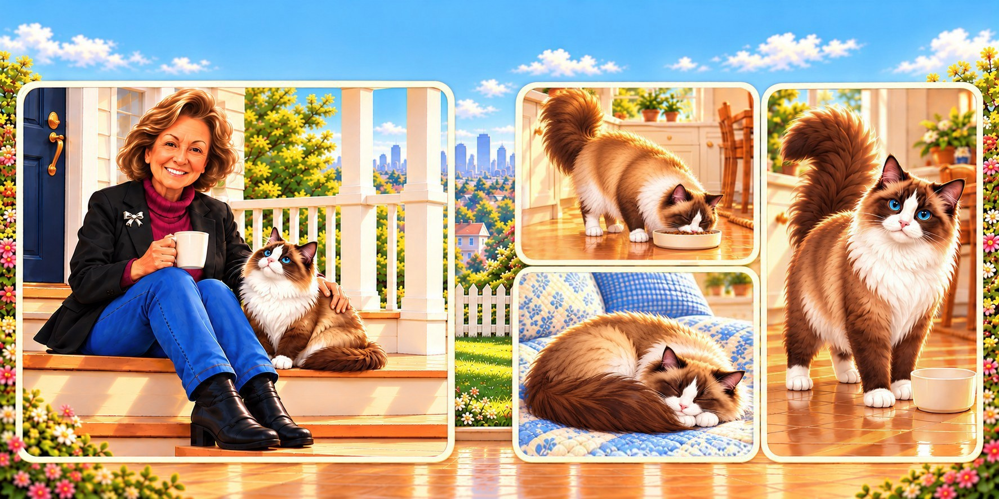
★ GOLD — Jon's own Photoshop touchup: AX's frame, the eating panel detailed, the sleeping quilt deepened.
Details
S01-AY V7 · Jon's Photoshop version. WHY: Jon took his AX gold back into Photoshop the same afternoon (2026-10-24) and handed back a light touchup pass — posted as-is, no generation, no regrade. PIXEL-DIFF vs S01-AX: AY sits directly on AX (mean |diff| 1.53; 3.0% of pixels changed). Jon's touchup: (1) the eating panel gets a light panel-wide detail/clarity pass (17.5% of that panel's pixels touched, spread evenly, no composition change, negligible color shift); (2) the sleeping panel's quilt foreground is strengthened — the bottom band of the quilt (12–15 mean |diff| there) reads deeper and crisper, with a slight overall lift to the panel, while sleeping Harlow himself is pixel-untouched; (3) the main panel and standing panel are AX unchanged for practical purposes (≤0.1% — Lois's face zone a whisper). Master s01-jon-ps-ay-2026-10-24/S01-AY-master.png, native 1774×887, md5 10617c477aa35b6da2c791fc20f84348. Jon's gold — 2026-10-24. AX was removed from V6 in the same call (it had been made gold hours earlier); it stays live on Spread Options and Final Pass V2, and AS keeps the S01 gold on V5.
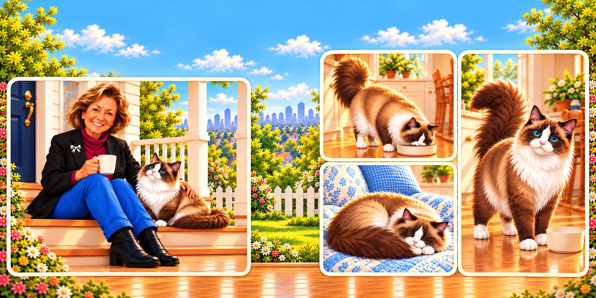
NEW OPTION — Lowered box AND a clean corridor down the fold.
Details
S01-BA WHY: Jon's follow-up on S01-AZ (2026-10-25) — keep a little open room in the middle so the spread won't look weird at the center when the book is opened flat. This version keeps the lowered Lois panel (its sky band is shallower than AZ's — the honest trade) and pulls the panels apart so a continuous background corridor of sky, garden and picket fence runs down the 44–56% center, no panel edge or face crossing it. GATE (Trinity, whole frame against gold AY): polish held; Lois's identity and brooch side correct. One native generation, governed off S01-AZ + the gold. Master s01-ba-master.png, native 1774×887, md5 7b336643…. Posted PLAIN on Spread Options and Final Pass V2; seated here as a NEW option on Jon's explicit call (2026-10-25). S01-AY keeps the S01 gold.
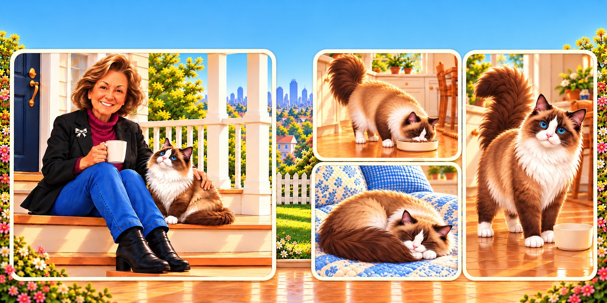
NEW OPTION — Polish pass on the gold — same scene, graded sky, calm text band.
Details
S01-BB WHY: Whole-book polish pass (Jon's call, 2026-10-25) — a polish of gold S01-AY, NOT a new scene: the same three panels, cast, staging and moment, kept exactly. Polish applied: sky graded to the arc's fresh-morning clear blue, smooth and calm; the calm sky band above the lowered Lois panel kept open for its text (panel layout from AY held); the center seam still falls on the porch-post strip between panels, no face in the 44-56% band; Harlow matched to the hero portrait in all three panels (sturdy plush build, continuous white blaze, cream-tan body, vivid blue eyes); Lois's likeness and her silver bow brooch on HER right lapel held. GATE (Trinity, whole frame vs gold AY + hero portrait): composition, likeness, cast locks and cartoon polish all held — PASS. One native generation, governed directly off the gold. Master s01-bb-master.png, native 1774×887, md5 c0f2c00f…. Posted PLAIN on Spread Options and Final Pass V2; seated here as a NEW option on Jon's explicit call (2026-10-25) for the whole-book polish pass.
★ GOLD — AE with the Mustang eased to a light grey-blue and a lighter interior.
Details
S02-AF V6 · NEW — S02 grey-blue color pass on AE · WHY (Jon, 2026-10-24): Jon loved S02-AE and asked for one more pass — the Mustang a little bit more light greyish blue so it doesn't read as blue, and the interior a bit lighter too. Done as a measured colour grade on AE's own pixels, NO regeneration: two masks (the painted bodywork; the interior upholstery), paint chroma pulled from mean saturation 0.57 to 0.35 with the hue nudged cooler and AE's highlight/shading structure preserved exactly, interior lightness lifted (mean value 0.66 → 0.69) and eased toward silvery grey-blue. Pixel-diff proof: 234,277 px changed, 0 outside the two masks — Lois, Harlow, chrome, pony emblem, headlights and background are AE byte for byte. Gate (Trinity's own eyes): at a glance the car reads light grey-blue with its gloss intact; emblem and chrome crisp at 3x; faces untouched. Plain on V6 — AD keeps the S02 gold; AE keeps its own card. Jon made AF the S02 gold on Final Pass V6 only, 2026-10-24; AD and AE were removed from V6 in the same call — the removed cards stay live on Spread Options and Final Pass V2, and AD keeps the S02 gold on V5.
NEW OPTION — Polish pass on the gold — same scene, graded sky, seam between the faces.
Details
S02-AG WHY: Whole-book polish pass (Jon's call, 2026-10-25) — a polish of gold S02-AF, NOT a new scene: the same head-on blue Mustang, highway, staging and moment, kept exactly. Polish applied: sky graded to the arc's fresh-morning clear blue, smooth and calm; the text sky at left kept open; the center seam sits between the two faces (Lois ~32%, Harlow ~62%), no face in the 44-56% band; both riders stay behind the windshield and below its top frame; Lois's likeness and her silver bow brooch on HER right lapel held; Harlow matched to the hero portrait (continuous white blaze, cream-tan body, vivid blue eyes); the Mustang keeps its glossy car-treatment shine and pale silvery blue-gray interior. GATE (Trinity, whole frame vs gold AF + hero portrait): composition, likeness, locks and polish all held — PASS. One native generation, governed directly off the gold. Master s02-ag-master.png, native 1774×887, md5 e89a41e4…. Posted PLAIN on Spread Options and Final Pass V2; seated here as a NEW option on Jon's explicit call (2026-10-25) for the whole-book polish pass.
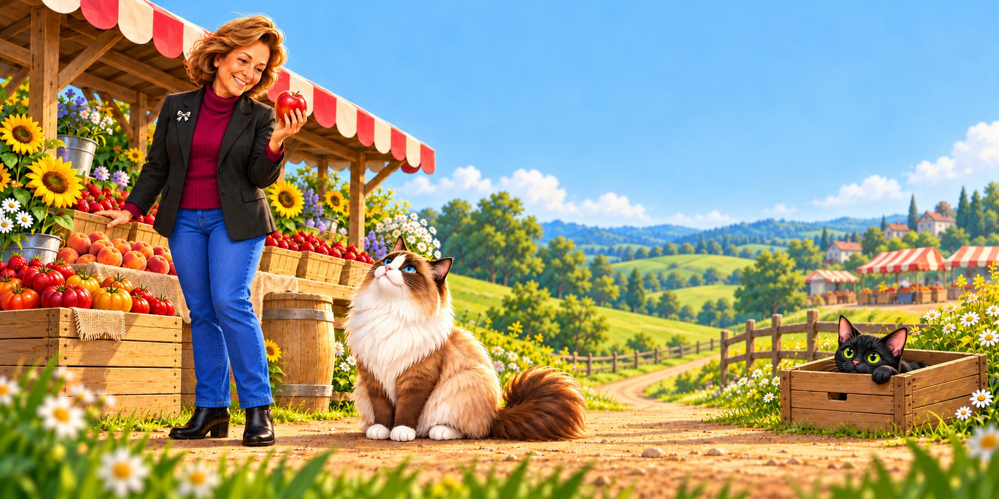
★ GOLD — At the market stall with Lois.
Details
S03-T V5 · best-of-best synthesis alt — Jon called it up, he loves the additions — Jon & Lois's S03 gold ★ GOLD — S03-T · Jon and Lois made it the new S03 gold on their 2026-10-23 review call. Jon called S03-T up to V5 (2026-10-23) — his words: the new T is great, he loves the additions here. WHY it was made: Jon's early S03 market versions held beats S doesn't use — Lois actually choosing a piece of fruit, Nero hidden inside the crate, and a market that feels like a whole market day; this pass tries those beats in the book's current style (S as style + Lois-face governor), produce held at S's own density per Jon's restraint note, story-checked against Rev.17 page 3. The option it offers: a warmer, more alive market morning. Jon and Lois removed S03-S from V5 on the same 2026-10-23 call and gave T the S03 gold.
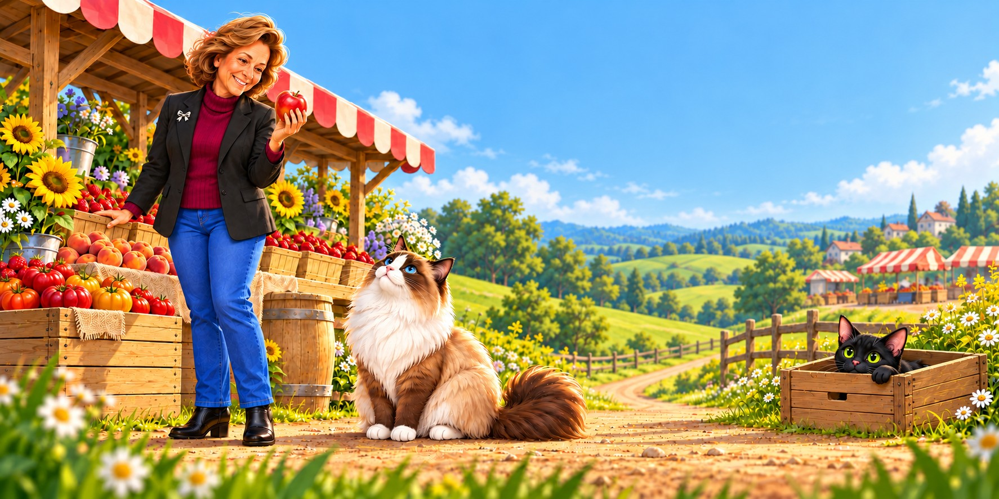
NEW OPTION — Polish pass on the gold — same scene, right-side text sky kept open.
Details
S03-U WHY: Whole-book polish pass (Jon's call, 2026-10-25) — a polish of gold S03-T, NOT a new scene: the same market staging, cast and moment, kept exactly. Polish applied: light graded to bright farm day; the text sky on the RIGHT kept open and calm, as the gold stages it; the center seam falls on open stall front and sky, no face in the 44-56% band; Lois's likeness held — beaming, holding her red apple, silver bow brooch on HER right lapel; Harlow matched to the hero portrait; Nero stays the black cat with green eyes in the crate at frame-right; no berries introduced. GATE (Trinity, whole frame vs gold T + hero portrait): composition, likeness, locks and polish all held — PASS. One native generation, governed directly off the gold. Master s03-u-master.png, native 1774×887, md5 a33e057d…. Posted PLAIN on Spread Options and Final Pass V2; seated here as a NEW option on Jon's explicit call (2026-10-25) for the whole-book polish pass.
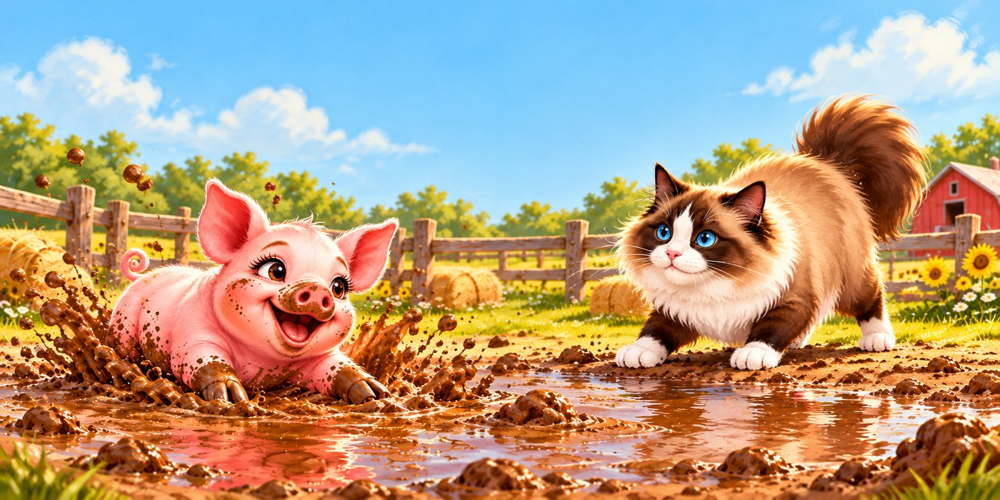
★ GOLD — Sweet Pea in the mud, Harlow watching.
Details
S04-M V4 · carried from V3 as-is ★ GOLD — Jon + Lois's pick, carried from V3 as-is.
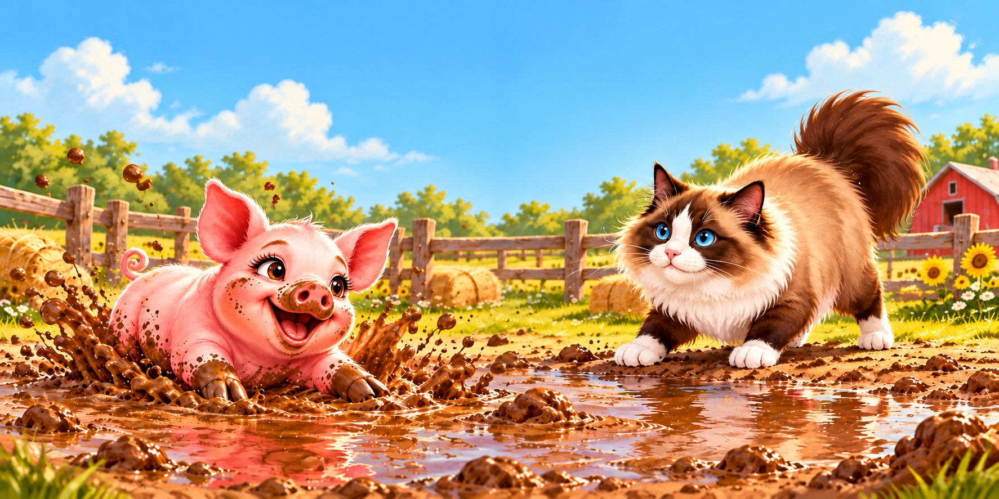
NEW OPTION — Polish pass on the gold — same scene, clean cartoon mud, seam on open ground.
Details
S04-N WHY: Whole-book polish pass (Jon's call, 2026-10-25) — a polish of gold S04-M, NOT a new scene: Sweet Pea's mud-puddle splash at left and Harlow crept up at the puddle's edge at right, kept exactly. Polish applied: sky graded to bright farm day, smooth and calm; the text sky across the top kept open; the center seam falls on open puddle and pasture, no face in the 44-56% band (pig ~26%, Harlow ~66%); Harlow matched to the hero portrait (continuous white blaze, white bib and mitts), interested and delighted — not scared; Sweet Pea stays joyful pink with her grin and flying MUD kept clean rounded cartoon shapes, never grit or texture. GATE (Trinity, whole frame vs gold M + hero portrait): composition, character reads, finish all held — PASS. One native generation, governed directly off the gold. Master s04-n-master.png, native 1774×887, md5 2b4a3910…. Posted PLAIN on Spread Options and Final Pass V2; seated here as a NEW option on Jon's explicit call (2026-10-25) for the whole-book polish pass.
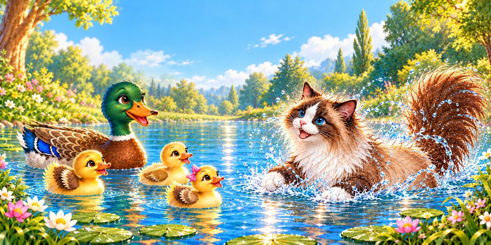
★ GOLD — Harlow in the pond with Fiona and the girls — the ducklings each her own, finished by Jon's own hand.
Details
S05-Y — Jon's own version, 2026-10-24 — takes the S05 gold on his order. WHY: the S05 line ran V (Jon's Photoshop retouch, the gold) → W (Lois's note answered: the two plain ducklings made individuals on V's own pixels) → X (Jon's catch repaired: the middle duckling's masked-looking head restored to V's original head art at W's paler tone). Jon then finished the scene himself and handed back this version as the winner, directing it posted as Y. PIXEL CHECK (Trinity): his frame is the W/X line — whole-frame MAD 2.21 vs X, 2.34 vs W, 3.03 vs V; the middle-duckling head zone sits at MAD 3.5 vs X against 7.5 vs W, i.e. the natural restored head, not the masked re-render; his hand concentrated on the duck-family side (Fiona zone MAD 5.1, duckling band 4.8), Harlow's side near-untouched (0.64), no global grade (mean signed diff ≈ 0). Exactly three ducklings, exactly one pink bow (Lili's); story-checked against Rev.17 page 5. No generation and no agent edit — Jon's file posted as-is; master S05-Y-master.png, native 1773×887, md5 33d425efa7ed812709774781c9d0eda1, banked in kit s05-y-gold-2026-10-24. S05-V, S05-W and S05-X were removed from V6 in the same call and stay live on Spread Options and Final Pass V2. Jon's gold — 2026-10-24.
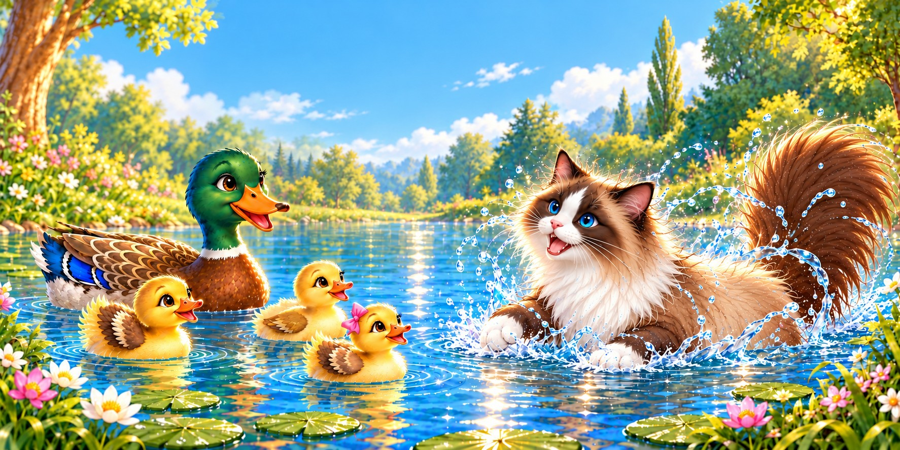
NEW OPTION — Polish pass on the gold — same scene, three ducklings, top band calm.
Details
S05-Z WHY: Whole-book polish pass (Jon's call, 2026-10-25) — a polish of gold S05-Y, NOT a new scene: Fiona and her ducklings at left, Harlow in the pond at right shaking off, kept exactly. Polish applied: light graded to warm farm midday; the text band across the top kept open and calm; the center seam falls on open water and far shore, no face in the 44-56% band; the duckling count held at EXACTLY THREE, with Lili's pink bow kept; Fiona's mallard read held (green head, brown body, blue wing patch); Harlow matched to the hero portrait, wet shake-off energy kept fun, never frantic. GATE (Trinity, whole frame vs gold Y + hero portrait): counts, composition and polish all held — PASS. One native generation, governed directly off the gold. Master s05-z-master.png, native 1774×887, md5 0c0a57de…. Posted PLAIN on Spread Options and Final Pass V2; seated here as a NEW option on Jon's explicit call (2026-10-25) for the whole-book polish pass.
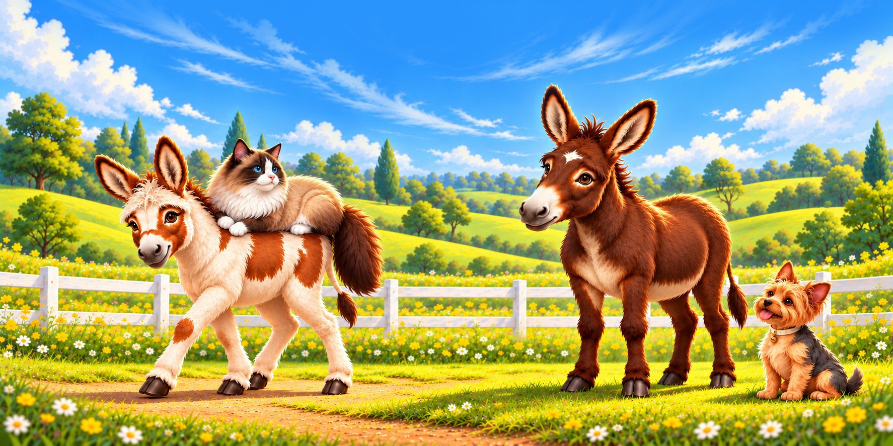
★ GOLD — A ride on Albie, with Molly and Dallas. (Your sky touch-up.)
Details
S06-AB V5 · Jon's Photoshop sky pass on AA — Jon's S06 gold ★ GOLD — S06-AB · the S06 gold on Final Pass V5 — Jon named AB the new S06 gold winner on 2026-10-24, taking the gold from S06-AA, which he removed from V5 the same night (AA stays live on Spread Options and Final Pass V2). Jon's own Photoshop pass on AA's frame: the wispy streak sky across the top of the frame reworked by his hand; every pose and the re-polished finish otherwise AA's exactly. AB also holds the S06 gold on Final Pass V3. Full record in the Spread Options summary.
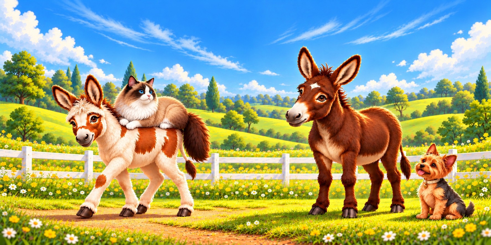
NEW OPTION — Polish pass on the gold — same scene, bright midday, seam on open meadow.
Details
S06-AC WHY: Whole-book polish pass (Jon's call, 2026-10-25) — a polish of gold S06-AB, NOT a new scene: Harlow riding Albie at left, Molly at right turned toward them, little Dallas sitting by her, kept exactly. Polish applied: sky graded to bright farm midday, smooth and calm; the text sky across the top kept open; the center seam falls on open meadow and sky, no main-character face center in the 44-56% band; Harlow matched to the hero portrait, riding seated with paws resting on Albie's back; Albie's white coat with warm brown patches held exactly; Molly stays the bigger solid-brown donkey with the small white forehead star; Dallas stays small with his light collar. GATE (Trinity, whole frame vs gold AB + hero portrait): composition, cast reads and polish all held — PASS. One native generation, governed directly off the gold. Master s06-ac-master.png, native 1774×887, md5 1a85dae9…. Posted PLAIN on Spread Options and Final Pass V2; seated here as a NEW option on Jon's explicit call (2026-10-25) for the whole-book polish pass.
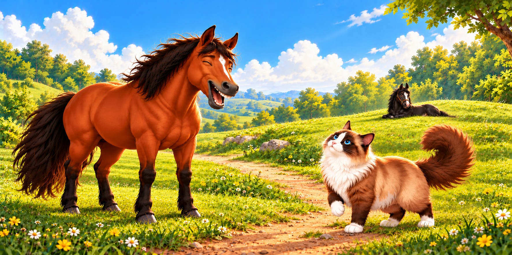
★ GOLD — Chester the horse can’t stop laughing.
Details
S07-AQ V5 · Pass 4 — Jon's synthesis: AP's polish and scale, Chester's laugh taken from AM (his named base reference), Dynamite distance-true, Harlow's gaze on the nose tip, a touch more sky — Jon & Lois's S07 gold ★ GOLD — S07-AQ · Jon & Lois's S07 gold — named the new S07 gold winner on their 2026-10-23 review call. S07-AQ — Pass 4 on S07 (2026-10-23): Jon called AP closer and better and its polish the book look to keep, but named AM his base reference for Chester's features — “his eyes closed and his whole features here… pretty much exactly the way I want” — and asked for three adjustments in one best version. Finish and scale governed off AP/AL as in pass 3; Chester's expression governed off AM. Cartoon polish holds whole-frame (grouped tufts, smooth forms, no painterly texture, no photographic detail — AP's sibling). Chester keeps the keeper scale (≈78% of frame height) and the full laughing-out-loud (upper teeth, dropped jaw, cheeks raised, star + long narrow streak exact, no tack) — with AM's eyes now: both crinkled nearly shut with mirth, superseding pass 3's disclosed open-eyes shade. Dynamite is distance-true smaller: span ≈15% of frame width (AP ≈25%; disclosed — past the 17–19% briefed band, in Jon's direction), awake and amused on the hill, blaze-to-pink-patch and halter exact. Harlow keeps his grounded wondering stance and small closed mouth, and his gaze is lowered onto the TIP of Chester's nose: head tilt, muzzle axis and pupils agree on the drawn sightline from his face center (67.5%, 56.0%) to the nose tip (46.6%, 34.8%). The frame is zoomed out a touch for text sky: the top of Chester sits at y≈9.4% vs AP's ≈7.0%, the tree line drops clear of the top edge (disclosed: less growth than the 11–13% ear-tip aim). Also disclosed: Chester's face center (42.3%, 26.6%) sits ~3 points right of AP and his nose tip reaches x≈46.6% — inside the gold AL's own graze (x≈47.8%), his face center clear of the x44–56 strip; Harlow sets ~9 points left of AP at the same size; fine wispy flyaways at Chester's mane edge at 3x. One wording used, wording 2 unspent. Open field, NO fence, exactly three characters. Story-checked against Rev.17 page 7. Seated PLAIN on V5 beside S07-AP — reviewed and passed by Trinity herself at her delivery gate, seated under Jon's delegation. In his 2026-10-23 V5 cleanup review Jon moved the S07 gold from S07-AL to this card, then restored the gold to AL later the same day ("for now"); AM, AN and AO were removed from V5 in the same review. On the evening Jon–Lois review call (2026-10-23) AQ was named the new S07 gold winner — AL stays on V5 as the plain alt, and S07-AP was removed from V5 in the same pass (AP stays posted on Spread Options + Final Pass V2).
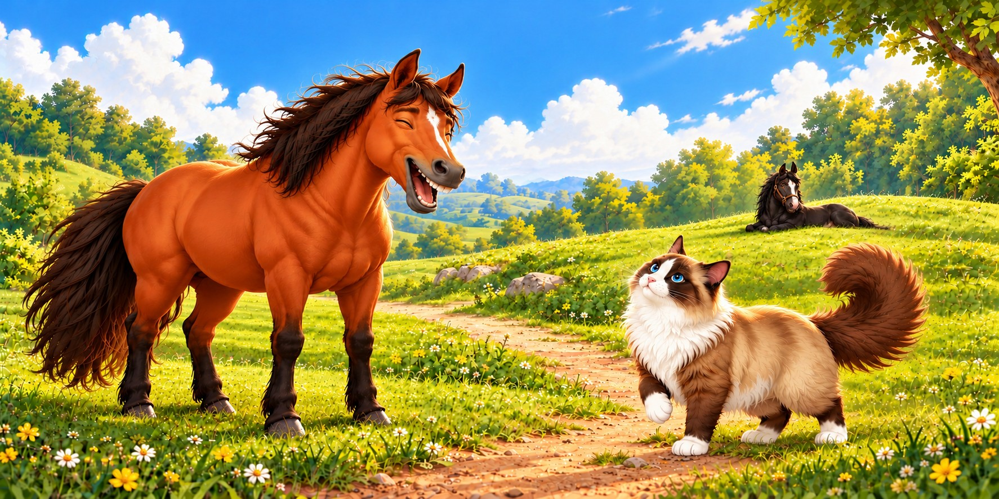
NEW OPTION — Polish pass on the gold — same scene, midday grade, seam on the path.
Details
S07-AR WHY: Whole-book polish pass (Jon's call, 2026-10-25) — a polish of gold S07-AQ, NOT a new scene: Chester laughing at left, Harlow upright at right looking up at him, Dynamite lying on the back hill, kept exactly (no fence, as the gold stages it). Polish applied: sky graded to warm midday and kept calm; the text sky across the top band kept open; the center seam falls on meadow path and sky, no main face in the 44-56% band; Harlow matched to the hero portrait (continuous white blaze, cream-tan body, one paw raised mid-gesture); Chester's full laughing-out-loud read and his narrow white star-and-streak blaze held; Dynamite stays a black horse LYING on the hill. GATE (Trinity, whole frame vs gold AQ + hero portrait, per-character identity reads): composition, identities and polish all held — PASS. One native generation, governed directly off the gold. Master s07-ar-master.png, native 1774×887, md5 61c56215…. Posted PLAIN on Spread Options and Final Pass V2; seated here as a NEW option on Jon's explicit call (2026-10-25) for the whole-book polish pass.
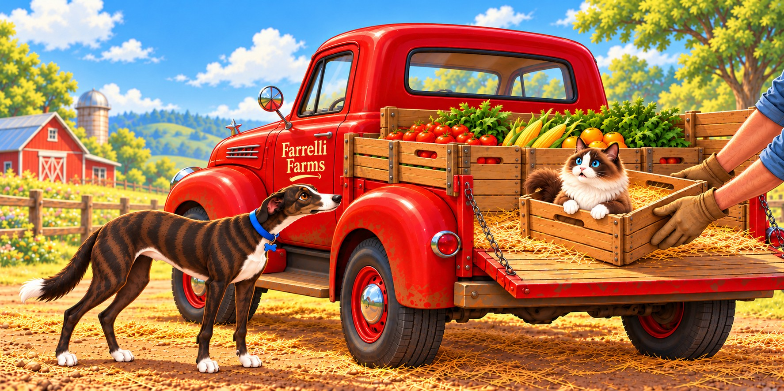
★ GOLD — Same truck scene, one cartoon polish across the whole page.
Details
S08-AG V6 · NEW — S08 style-unification pass on gold AD · WHY (Jon, 2026-10-24): AD's elements read as different styles to Jon, so he ordered a new regeneration of the page — every pose and position kept the same (truck in profile center-frame, Paco standing frame-left looking up at Harlow, Harlow in his crate at the bed's rear, the farmer's two gloved hands at frame-right, produce crates fronting the bed) while the whole page is re-rendered in the best single cartoon polish. Full-frame fresh generation governed directly off AD (Codex lane, wording 1 of 2). 'Farrelli Farms' door lettering letter-perfect at 3x with the M formed and the flourish under Farms; chrome star hood ornament present; Paco exactly four legs, near-black charcoal brindle, blue collar + one bone tag; Harlow's startle holds whole — wide round blue eyes, both white mitts on the crate rim, tail plume inside the crate, face (75.8%, 39%) clear of the fold; roof tops at y5.86% vs AD's y5.98%. Disclosed: a tiny pale tooth tip reads inside Harlow's open 'oh' at 6x — the natural inside of the startled mouth, for the desks. Plain on V6 — AD keeps the S08 gold on every page. Jon made AG the S08 gold on Final Pass V6 only, 2026-10-24; AD was removed from V6 in the same call — it stays live on Spread Options and Final Pass V2 and keeps the S08 gold on V5.
NEW OPTION — Polish pass on the gold — same scene, door lettering exact, arms-only farmhand.
Details
S08-AH WHY: Whole-book polish pass (Jon's call, 2026-10-25) — a polish of gold S08-AG, NOT a new scene: the red Farrelli Farms truck, Harlow's crate at the open tailgate, the farmhand's gloved arms, Paco watching, kept exactly. Polish applied: light graded to warm farm midday; the text sky across the top kept calm; the center seam falls on truck bed and pasture, no main face in the 44-56% band; the truck's locks held — produce crates toward the front, ONE crate (Harlow's) at the open rear, chrome star ornament, and the cream 'Farrelli Farms' door lettering reading exactly right; the farmhand stays ARMS ONLY; Harlow matched to the hero portrait. One honest flag: Paco's brindle reads slightly lighter-striped here than the gold's near-black — his build, all-fours stance, blue collar and kind look-back all held. GATE (Trinity, whole frame vs gold AG + portraits, per-character identity reads): PASS with that one coat note for Jon's eye. One native generation, governed directly off the gold. Master s08-ah-master.png, native 1774×887, md5 c8a38955…. Posted PLAIN on Spread Options and Final Pass V2; seated here as a NEW option on Jon's explicit call (2026-10-25) for the whole-book polish pass.
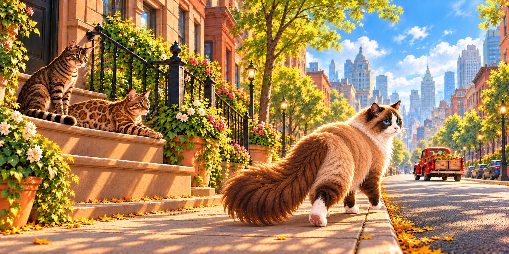
★ GOLD — Wording-2 take, up at Jon's call to compare: Harlow and tail right; cats still high.
Details
S09-AO V6 · NEW — S09 pass 3, wording 2 (called up by Jon). This take was HELD at Trinity’s gate during from-scratch pass 3 and was not posted in the pass. What landed: Harlow exactly as Jon ordered — standing mid-stride at the curb, the AN face read (three-quarter, both blue eyes clear, muzzle carried forward down the street after the departing truck, worried-wistful), and a native tail that is full, complete and whole at 3x — no cutouts, no scallops, no missing chunks (the flaw that killed AN’s masked tail). What missed: the stoop rendered tall again, so the step cats ride high on the page — KitKat’s head-top measures y13.2% of frame height against gold AJ’s y31.8%, Nala’s y34.6% against AJ’s 44.3% — the staging Jon rejected in AM/AN and ordered matched to AJ. On 2026-10-24 Jon called this take up onto the page anyway, to see it larger and compare it against the cards here, while wording 3 remakes the pass under a new steer: Harlow governed off the S22 walking-home frame plus the AN head crop instead of the full AN frame, with the stoop’s geometry taken hard from AJ. Posted here as a called-up option, NOT as a gate pass; also posted PLAIN on Spread Options and Final Pass V2. Banked take: harlow-art-kit/s09-scratch3-2026-10-24/gen/take-w2.png, native 1774×887, md5 b1be9dac…. Jon ruled AO the S09 gold on 2026-10-24; S09-AQ was removed from V6 in the same call and stays live on Spread Options and Final Pass V2. Jon's gold — 2026-10-24.
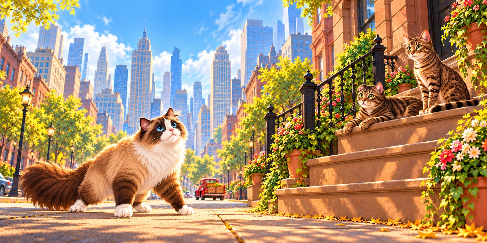
NEW OPTION — Jon's staging: both cats together on the right.
Details
S09-AS WHY: Jon's staging call on S09 (2026-10-25) — try a version with both cats on the right side together, 'the cat stretched out on the steps and the other cat next to him.' Here KitKat stretches long on the brownstone steps with Nala seated right beside her; Harlow skids in at front-left; the truck is small and departing; no cat anywhere else. GATE (Trinity, whole frame against gold AO): polish held; KitKat torbie-brown with green eyes; Nala's rosettes soft and smoky. One native generation. (Jon later swapped the cats' roles and re-staged the street — see S09-AT and S09-AV.) Master s09-as-master.png, native 1774×887, md5 b44c5a15…. Posted PLAIN on Spread Options and Final Pass V2; seated here as a NEW option on Jon's explicit call (2026-10-25). S09-AO keeps the S09 gold.
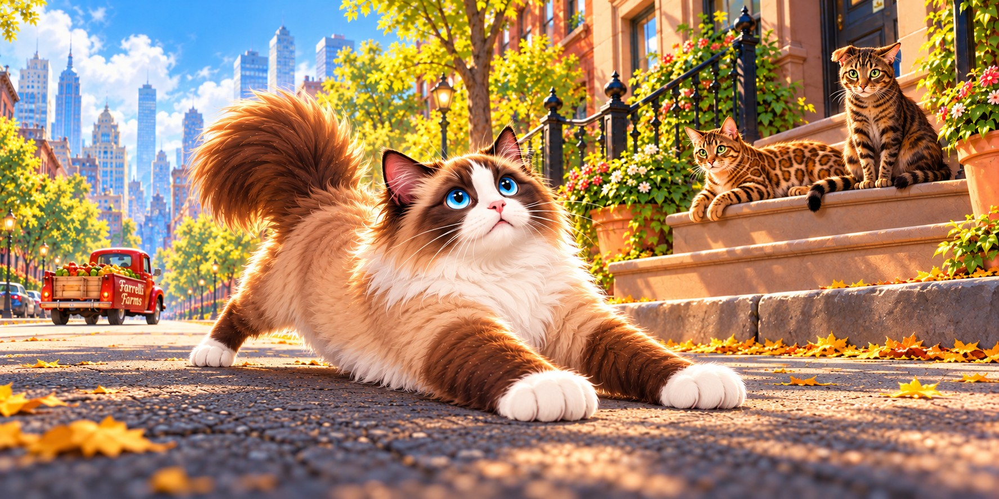
NEW OPTION — The street reads right — Harlow ON it, steps behind.
Details
S09-AT WHY: Jon's street correction (2026-10-25) — in AS the stretching cat was the wrong one and the street geometry read awkward. New staging: camera low at street level, the street in the foreground, Harlow big ON the street doing a long shake-off stretch like he just fell out of the truck, dazed and stressed; the brownstone steps rise BEHIND him at frame-right with NALA stretched out long and KitKat seated beside her; the truck small and departing at frame-left. GATE (Trinity, whole frame against gold AO): polish and cast held; truck lettering correct. FLAG, stated plainly: Harlow's face landed at about 48%, inside the fold band — S09-AV re-stages this same shot with him clear of it. One native generation. Master s09-at-master.png, native 1774×887, md5 48984190…. Posted PLAIN on Spread Options and Final Pass V2; seated here as a NEW option on Jon's explicit call (2026-10-25). S09-AO keeps the S09 gold.
NEW OPTION — AR with the cats swapped into their new spots.
Details
S09-AU WHY: Jon's variant on the original S09-AR (2026-10-25) — go back to the first staging (Harlow skidding front-left, truck small and far at right, calm top third for the text) and just re-place the cats: KitKat up in the window box at frame-left, Nala stretched out long on the brownstone staircase at frame-right. GATE (Trinity, whole frame against gold AO): polish held; the window-box KitKat reads a touch light against her deep-espresso canon — noted for Jon's eye. One native generation. Master s09-au-master.png, native 1774×887, md5 25189de6…. Posted PLAIN on Spread Options and Final Pass V2; seated here as a NEW option on Jon's explicit call (2026-10-25). S09-AO keeps the S09 gold.
NEW OPTION — Best-of-best street take — face clear of the fold.
Details
S09-AV WHY: Trinity's free-pass S09, on Jon's brief (2026-10-25): best of the best, text area designed in, no seam problems. It takes AT's corrected street staging — low camera, Harlow stretching on the street after the tumble, the steps behind him at right with Nala stretched out and KitKat seated, the truck departing — and moves Harlow left so his face sits at about 34% of the width, clear of the 44–56% fold band. The bright mid-morning sky is deliberate: S09 sits hours before S18's sunset in the book's day arc. GATE (Trinity, whole frame against gold AO): polish and cast held. One native generation (the model returned two near-twins; the seam-clean one is posted). Master s09-av-master.png, native 1774×887, md5 3cbcbe35…. Posted PLAIN on Spread Options and Final Pass V2; seated here as a NEW option on Jon's explicit call (2026-10-25). S09-AO keeps the S09 gold.
NEW OPTION — Top third kept calm so S09's text sits on quiet sky.
Details
S09-AR WHY: text-accommodation alt, made on Jon's call after the v3.2 print test (2026-10-25). In the gold, S09-R's three lines cross trees, rooftops and brownstone — Trinity's full-book sweep called it the lowest-contrast text block in the book. NEW shot staged for the text: Harlow skidding to a stop low on the sidewalk and looking up, small against the towers, the whole top third kept as calm pale sky and smooth tower glass so both text blocks sit on quiet ground; the red truck small and departing far right; KitKat on the brownstone steps and Nala at a window box remain as Lois's page-9 Easter eggs. GATE (Trinity, whole frame against gold AO): polish held; KitKat deep espresso torbie, Nala's rosettes soft and smoky. One native generation. Master s09-ar-master.png, native 1774×887, md5 6fa62a5f…. Posted PLAIN on Spread Options and Final Pass V2; seated here as a NEW option on Jon's explicit call (2026-10-25). S09-AO keeps the S09 gold.
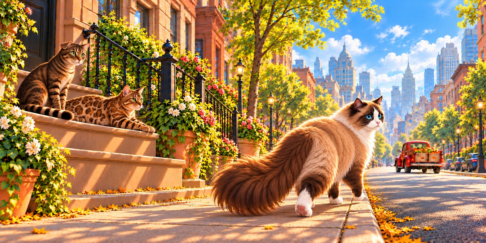
NEW OPTION — Polish pass on the gold — same scene, both cats identity-checked at close read.
Details
S09-AW WHY: Whole-book polish pass (Jon's call, 2026-10-25) — a polish of gold S09-AO, NOT a new scene: Harlow on the sidewalk looking back, the red truck departing at frame-right, KitKat upright on the top step and Nala stretched on the steps below her, kept exactly. Polish applied: sky graded to city late-morning, bright and calm; the text sky at the top-right kept open; the center seam falls on open street and stoop greenery, no main face in the 44-56% band; Harlow matched to the hero portrait. Identity gate (Jon's tightened rule, 2026-10-25): the first render was HELD and never posted — its KitKat read as a plain brown tabby with no folded ear. This retry holds her at close read: deep warm espresso TORBIE coat, green eyes, and the folded tip on her RIGHT ear clearly visible; Nala's golden-brown coat carries bold dark rosettes, richer as canon directs. GATE: PASS on the retry. Master s09-aw-master.png, native 1774×887, md5 71cecbbe…. Posted PLAIN on Spread Options and Final Pass V2; seated here as a NEW option on Jon's explicit call (2026-10-25) for the whole-book polish pass.

★ GOLD — Pizza in the alley with Philly.
Details
S10-T V4 · fresh remake — ghost killed, staging held ★ GOLD — S10-T · Jon promoted it 2026-10-22: the fresh from-scratch remake — S attached for staging, Jon's ghost crop attached as the flaw exhibit; the pavement behind the box is clean and solid, French Fry's size and the Harlow–Philly spacing held (gap 17.4% vs S's 17.9%).
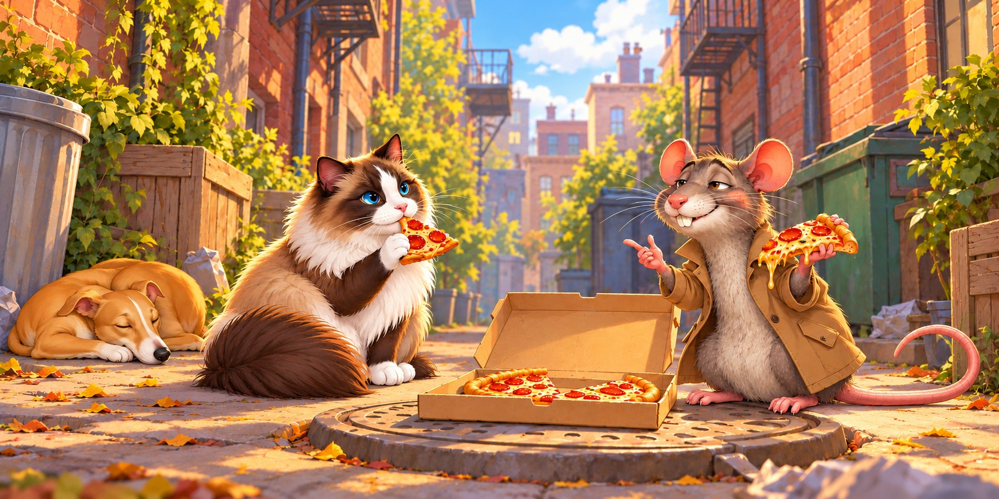
NEW OPTION — Polish pass on the gold — same scene, Philly identity-checked at close read.
Details
S10-U WHY: Whole-book polish pass (Jon's call, 2026-10-25) — a polish of gold S10-T, NOT a new scene: the warm daytime alley, Philly lecturing over the open pizza box on the manhole, Harlow eating his slice, French Fry asleep at frame-left, kept exactly. Polish applied: light graded to city midday, warm and calm; the alley sky at the top kept open; the center seam falls on the pizza box and open alley, no main face in the 44-56% band; Harlow matched to the hero portrait. Identity gate (Jon's tightened rule, per-character close reads): Philly is himself — grizzled gray-dominant fur, sly half-lid eyes, buck tooth, and the TAN TRENCH COAT on; French Fry stays a plain tan dog asleep. GATE: PASS. One native generation, governed directly off the gold. Master s10-u-master.png, native 1774×887, md5 4257df17…. Posted PLAIN on Spread Options and Final Pass V2; seated here as a NEW option on Jon's explicit call (2026-10-25) for the whole-book polish pass.
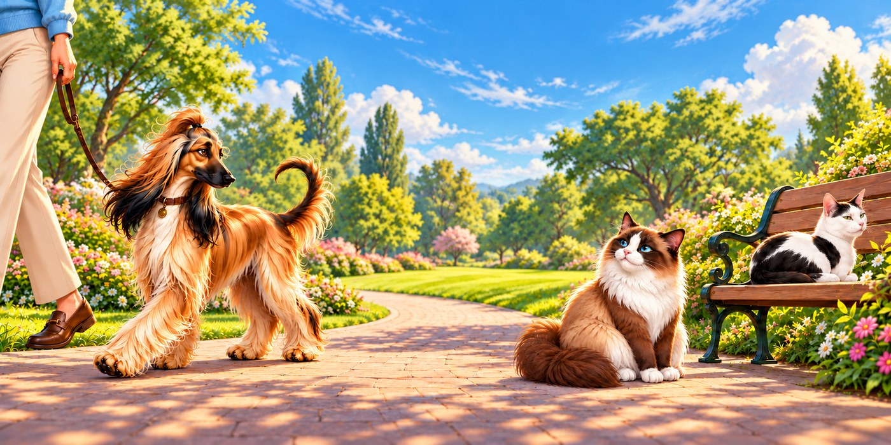
★ GOLD — Same park meeting, fresh angle, sky and trees reworked.
Details
S11-L V6 · NEW — S11 fresh-angle pass on gold K. NEW at Jon's call (2026-10-24): Jon asked for K's page made a little better — a slight different angle, a sky adjustment and background polish to give it a better feel — with the same positions overall, and called out that the background trees in K are all the same. A fresh Codex generation governed by K's own frame, with Penelope's and Harlow's canonical portraits attached: every position and pose held — the cropped owner at the left edge (trousers, loafer, hand on the leash, no more of the person than K shows), Penelope left-of-centre in profile with her head turned to Harlow, Harlow sitting centre-right on the path with his face up to her so their eyelines meet, and Endeavor lying on the bench at frame-right with his exact patch pattern from K (white face and chest, black cap over the crown covering the far ear, black saddle, large rear-flank patch, separate shoulder patch divided from the saddle by white, black tail wrapped) and K's staging — head tilted partway over his shoulder, chin up, half-lidded gold-green eyes, pointedly nonchalant. Changed only Jon's three asks: (1) camera a touch lower and gently shifted, so the brick path's curve leads the eye further; (2) a sky with a real blue gradient and clouds of many shapes and sizes, no repeated stamps; (3) background trees all different — varied silhouettes, sizes and species-feel, layered near, mid and far — K's identical lollipop row is gone. The background also gains a pink blossom tree mid-distance and faint blue hills on the horizon as part of the depth polish; no locked element moved. Two wordings: the first read Endeavor in full profile and was banked unposted; this second take holds his over-the-shoulder nonchalance. Trinity gated it whole-frame and at 3x against K before posting. Seated here as a NEW option beside gold K so Jon + Lois can compare and rule. K keeps the S11 gold on V6. Jon made L the S11 gold on Final Pass V6 only, 2026-10-24; K was removed from V6 in the same call — it stays live on Spread Options and Final Pass V2 and keeps the S11 gold on V5.
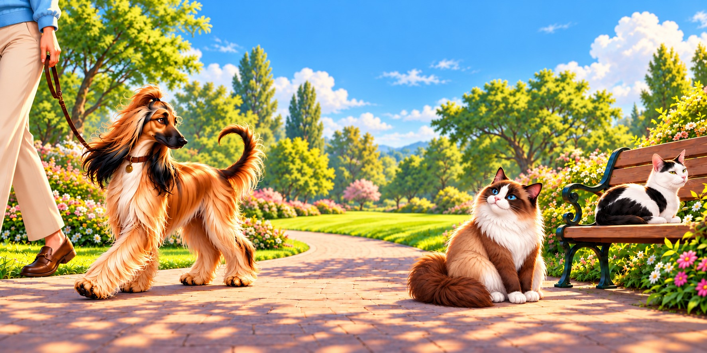
NEW OPTION — Polish pass on the gold — same scene, Endeavor identity-checked at close read.
Details
S11-M WHY: Whole-book polish pass (Jon's call, 2026-10-25) — a polish of gold S11-L, NOT a new scene: Penelope the Afghan hound passing on her leash at left, Harlow seated on the park path watching her, Endeavor lounging on the bench at frame-right, kept exactly. Polish applied: sky graded to bright city midday, smooth and calm; the text sky across the top kept open; the center seam falls on open path and lawn, no main face in the 44-56% band; Harlow matched to the hero portrait, sly curious read kept. Identity gate (Jon's tightened rule, per-character close reads against the gold + portraits): Penelope's flowing golden coat, dark ears, topknot, curled tail and collared tag all held; Endeavor is himself — white face and chest, black cap over the crown, black saddle and flank patches, head turned away over his shoulder, chin up, half-lidded gold-green eyes, pointedly nonchalant. GATE: PASS. One native generation, governed directly off the gold. Master s11-m-master.png, native 1774×887, md5 5a78b7a9…. Posted PLAIN on Spread Options and Final Pass V2; seated here as a NEW option on Jon's explicit call (2026-10-25) for the whole-book polish pass.
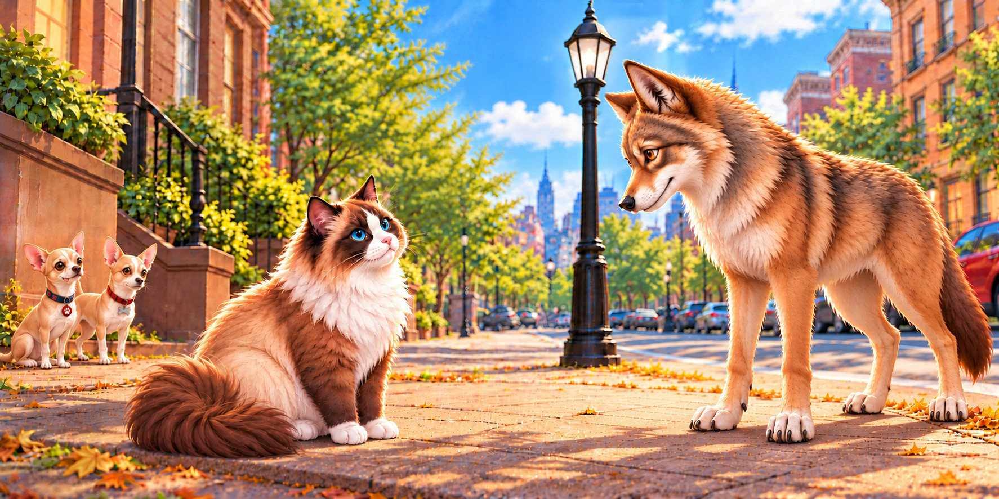
★ GOLD — Jon's own Photoshop pass: Harlow seated left, Otis right, clear of the seam.
Details
S12-AK V6 · NEW — S12-AK · Jon's Photoshop version · Jon's own Photoshop side-swap version of the S12-AE line, posted as-is 2026-10-24 — his pixels, no re-render, no polish. Pixel-diff identifies the base frame as S12-AI (mean |diff| 5.2; 14% of pixels changed), the line's restaged descendant: Harlow seated left with his plume curled in front, Otis standing right well clear of the seam, Chowder + Monkey at the far left. Jon's changes concentrate in the left third (24% differs, including 18% in the dogs zone) and in sky retouching (21% of the sky band differs at the same brightness — cloud work); Otis and the right third are essentially AI (6%). S12 gold stays V on V6. Jon's gold — 2026-10-24.
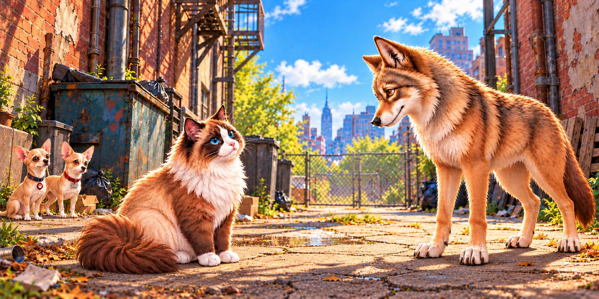
NEW OPTION — The alley without the stray sidewalk lamp.
Details
S12-AQ WHY: Jon's fix on S12-AP (2026-10-25) — the tall lamp post carried over from the gold's sidewalk 'looks out of place now' in the grunge alley. This version removes it entirely: where it stood, the alley simply continues — cracked concrete, chain-link gate, trees and skyline under the midday sky. Everything else is AP: the gold's staging, Lois's grunge environment, bright midday kept. GATE (Trinity, whole frame against gold AK + AP): polish held; Harlow consistent; Otis accessory-free; collar locks correct. One native generation, governed off AP. Master s12-aq-master.png, native 1774×887, md5 4afb97df…. Posted PLAIN on Spread Options and Final Pass V2; seated here as a NEW option on Jon's explicit call (2026-10-25). S12-AK keeps the S12 gold.
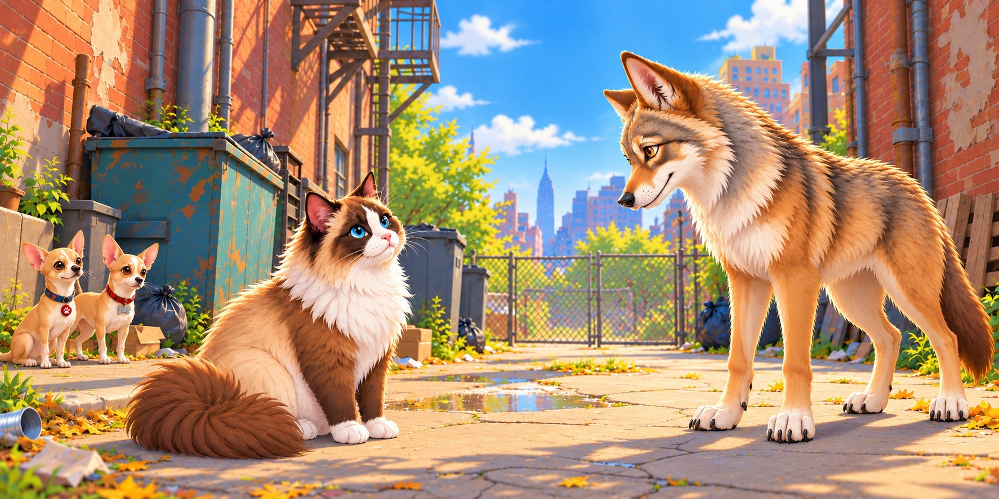
NEW OPTION — The alley, in the book's own hand.
Details
S12-AR WHY: Jon's finish check on S12-AQ (2026-10-25) — he loved the scene but flagged that the alley rendered too painted/detailed next to the book's cartoon polish (the same finish-mismatch family as the earlier car/truck scene). This pass keeps AQ's exact scene — gold staging, Lois's grunge environment, midday, no lamp post — and redraws ONLY the finish in the gold's hand: smooth teal dumpster with flat rust color patches, clean warm walls, smooth concrete slabs with simple crack lines, puddles as bright mirror shapes. The grunge is in what's in the alley, not in gritty texture. GATE (Trinity, whole frame against gold AK + AQ): photographic grain gone, surfaces sit inside the book's polish family; characters and locks unchanged. One native generation, governed off AQ + the gold. Master s12-ar-master.png, native 1774×887, md5 99a5c942…. Posted PLAIN on Spread Options and Final Pass V2; seated here as a NEW option on Jon's explicit call (2026-10-25). S12-AK keeps the S12 gold.
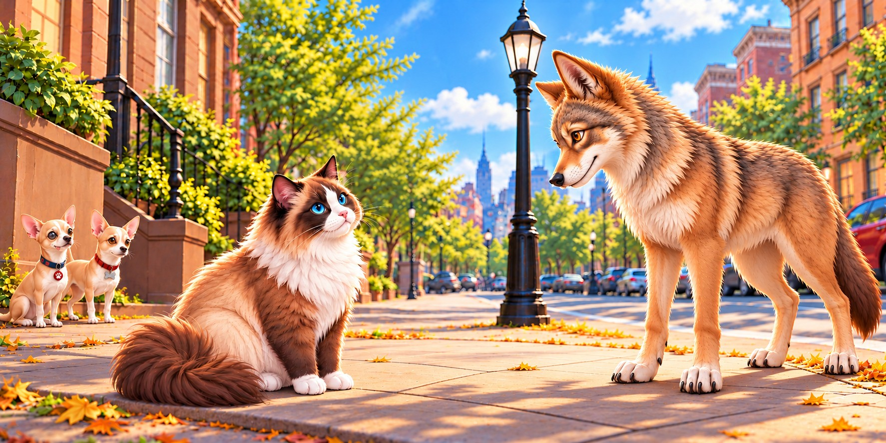
NEW OPTION — Polish pass on the gold — same bright midday staging, faces clear of the seam.
Details
S12-AS WHY: Whole-book polish pass (Jon's call, 2026-10-25) — a polish of gold S12-AK, NOT a new scene: the same BRIGHT midday sidewalk staging (time of day unchanged, as Jon ruled), Harlow and Otis face to face mid-sidewalk, Chowder and Monkey watching from the far-left stoop. Polish applied: light kept bright afternoon-warm and calm; the text sky across the top kept open; faces moved clear of the seam (Harlow ~35%, Otis ~63%), the lamp standing in the open band between them; mutual eyelines held — they look at each other. Identity gate (Jon's tightened rule, per-character close reads): Otis is himself — grizzled tan-gray coyote, amber eyes, cream muzzle, no accessories; Chowder's navy collar and round red paw tag and Monkey's red collar and silver bone tag both read at close crop. GATE: PASS. One native generation, governed directly off the gold. Master s12-as-master.png, native 1774×887, md5 1770ccfb…. Posted PLAIN on Spread Options and Final Pass V2; seated here as a NEW option on Jon's explicit call (2026-10-25) for the whole-book polish pass.
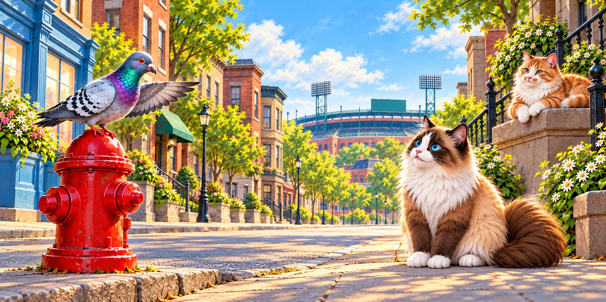
★ GOLD — Gideon the pigeon, with Tiger watching from the stoop.
Details
S13-Q V5 · re-visioned staging alt — seated by Trinity under Jon's delegation — Jon's S13 gold ★ GOLD — S13-Q · Jon's S13 gold since his 2026-10-23 V5 cleanup review. Seated PLAIN on Final Pass V5 by Trinity under Jon's 2026-10-23 delegation — his standing instruction tonight: review the baking renders, catch any mistakes, and upload the ones Trinity is happy with to the V5 page for his fresh-eye review tomorrow; Trinity reviewed Q's preview herself and is happy with it. (S13-P held the S13 gold then; Jon moved it to this card in his 2026-10-23 V5 cleanup review.) WHY it was made: gold P's cast and world were right, but its geometry undercut the beat, so this alt re-visions P's own staging around FOUR MEASURED FIXES: (1) the street sweeps DIAGONALLY, converging right-of-center at the ballpark, instead of P's dead-center one-point corridor whose vanishing point sat on the seam with empty pavement at the frame's center; (2) Harlow's gaze finally lands ON Gideon — head turned left in three-quarter view, chin level (P's skyward tip gone), blue pupils placed on the pigeon — face center measured (72.0%, 48.2%), Gideon's head (23.3%, 20.2%), the sightline matching at 3x, so the page-13 guide conversation lands; (3) the ballpark is bigger and clearer — a tiered grandstand arc with crowd texture, two light towers and a large blank green scoreboard — the destination unmistakable; (4) the buildings are VARIED building-to-building (the blue storefront, a tall red-brick with pale stone lintels, a shorter brownstone with a green awning, a tan bay-window block, heights staggered) instead of one red-brick family stamped down both sides. Held from P: the bright glossy RED hydrant (full car treatment), Gideon recipe-true on its dome with one wing extended pointing down the street at the park, and Tiger at P's smaller scale on the brownstone steps — one bold solid ginger mustache band, pale sage heavy-lidded eyes watching the pair. One honest disclosure: the ballpark overshot its ~15–20% staging aim to ≈26.5% of frame width — it reads as the destination and bridges straight into S14's ballpark pages; disclosed plainly, not rounded into range. Story-checked against Rev.17 page 13. GOLD since Jon's 2026-10-23 V5 cleanup review — the challenger took the S13 gold; S13-P stays on V5 as the plain alt.
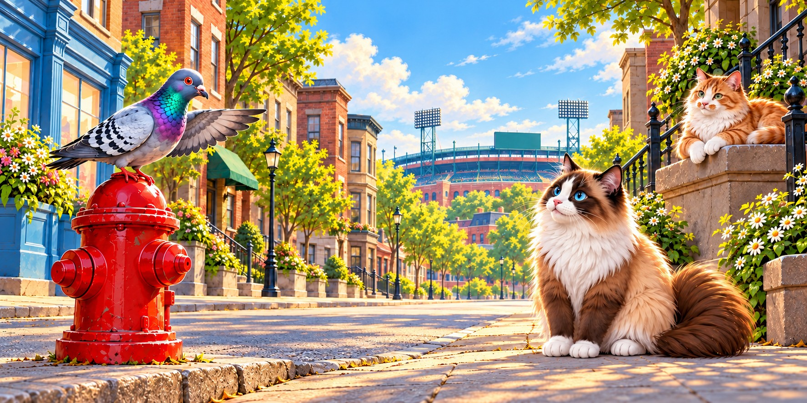
NEW OPTION — Polish pass on the gold — same scene, Gideon’s pointing wing held.
Details
S13-V WHY: Whole-book polish pass (Jon's call, 2026-10-25) — a polish of gold S13-Q, NOT a new scene: Gideon on the red hydrant pointing the way, Harlow below looking up at him, Tiger lounging on the stoop at frame-right, the stadium in the distance, kept exactly. Polish applied: light graded to afternoon warming — the first of the ballpark-day spreads; the text sky across the top kept open; the center seam falls on open street and the stadium approach, no main face in the 44-56% band; the stadium kept clean of any signage or lettering. Identity gate (Jon's tightened rule, per-character close reads): Gideon is himself — gray pigeon, iridescent green-purple neck, red eye, and the pointing wing extended toward the stadium; Tiger's ginger longhair read and white chest held. Harlow matched to the hero portrait. GATE: PASS. One native generation, governed directly off the gold. Master s13-v-master.png, native 1774×887, md5 8584912f…. Posted PLAIN on Spread Options and Final Pass V2; seated here as a NEW option on Jon's explicit call (2026-10-25) for the whole-book polish pass.
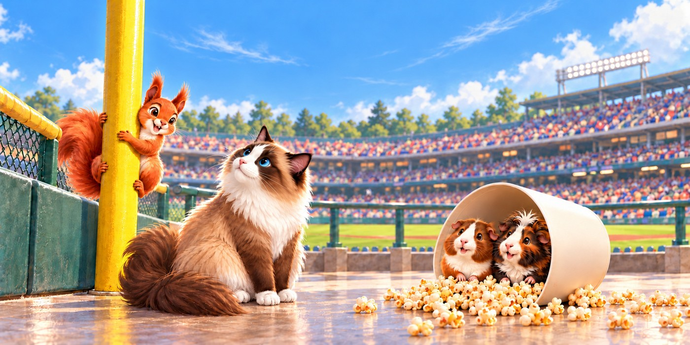
★ GOLD — At the ballpark with Chippy and the guinea pigs.
Details
S14-M V5 · Alt off gold L — face truer, gaze onto Chippy, treeline de-duplicated, sky wisp + deeper blue — Jon's S14 gold ★ GOLD — S14-M · the S14 gold on Final Pass V5 — Jon named M the new S14 gold winner on 2026-10-24, taking the gold from S14-L, which he removed from V5 the same night (L stays live on Spread Options and Final Pass V2). S14-M — the alt off almost-perfect L · WHY it was made: Jon's call (2026-10-24): S14-L is almost perfect — try an alt keeping almost everything as is, but Harlow's face more correct and his eyes right at the squirrel's eyes (in L he looks a little too high), try not to have the same duplicated-tree issue, and a little bit of wisp in the sky cloud with a slight deeper bluish tint mixed into the sky. Measured at Trinity's gate: Harlow's face portrait-true at 3x (seal cap and ears, continuous white blaze, pink nose, blue eyes); his pupils sit displaced up-left in their irises, on the sightline from his eye midpoint (38.7%, 44.6%) to Chippy's (23.5%, 33.7%), and Chippy's gaze returns down at him; the treeline strip crop shows varied species, heights and silhouettes — no repeated stamped trees (L's band repeated one lollipop shape); the sky carries thin cirrus wisps and samples (85–104, 168–174, 252) against L's paler (130, 196, 252). Canon at 3x: Chippy orange-red with tufted ears and cream chest, four paws gripping the yellow pole; Nicholas's centered white stripe and brown cheeks; Norman's spiky white crown tuft and two-tone nose; census clean (one squirrel, one cat, two guinea pigs). One disclosure: Harlow's mouth is closed here where L's was open in a smile. STORY-SUPPORT: Rev.17 page 14 — Chippy climbing the foul pole and the popcorn-bucket moment with Nicholas and Norman; the frame is that beat. METHOD + RECORD: fresh full generation governed off S14-L (Codex gpt-image lane), wording 1 of 2; master s14-alt-2026-10-24/gen/w1-master.png (md5 6cc1dd7c…); full record in s14-alt-2026-10-24/RECORD.md. Posted PLAIN here and on Final Pass V2, seated PLAIN on Final Pass V5 beside L. S14-L keeps the gold.
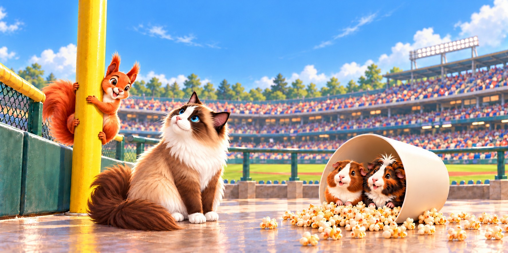
NEW OPTION — Polish pass on the gold — same scene, both guinea pigs identity-checked.
Details
S14-O WHY: Whole-book polish pass (Jon's call, 2026-10-25) — a polish of gold S14-M, NOT a new scene: the ballpark concourse — Chippy climbing the yellow foul pole at left, Harlow seated watching him, Nicholas and Norman in the tipped popcorn bucket at right with the popcorn spilled, kept exactly. Polish applied: light graded to ballpark day, matched to the S13-S16 shared light; the text sky across the top kept open; the center seam falls on open concourse and stands, no main face in the 44-56% band. Identity gate (Jon's tightened rule, per-character close reads): Nicholas and Norman are both unmistakably GUINEA PIGS with their distinct coats, tucked in the one tipped bucket; Chippy's squirrel read — russet coat, ear tufts, big tail — held on the pole. Harlow matched to the hero portrait. GATE: PASS. One native generation, governed directly off the gold. Master s14-o-master.png, native 1774×887, md5 38a969de…. Posted PLAIN on Spread Options and Final Pass V2; seated here as a NEW option on Jon's explicit call (2026-10-25) for the whole-book polish pass.
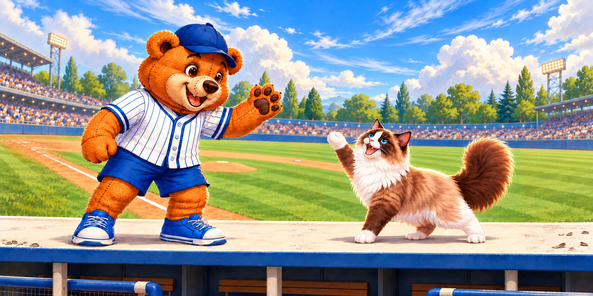
★ GOLD — A high-five with the Hibernator.
Details
S15-X V5 · Alt of W — dynamic sky, varied tree line; scene and cast held — Jon & Lois's S15 gold ★ GOLD — S15-X · the S15 gold on Final Pass V5 — the dynamic-sky, varied-treeline alt of W; made gold on the 2026-10-23 Jon–Lois review call. An alt of the new gold W answering Jon’s sky and tree-line notes: the puzzle-piece clouds are replaced by a dynamic sky with streaming, layered, moving cloud structure, and the cloned-stamp tree line behind the stadium is broken into varied species, heights and spacing. The ballpark scene, cast and staging hold as in W (a faithful regeneration governed on W, disclosed in the Spread Options summary). On the 2026-10-23 Jon–Lois review call this alt took the S15 gold from W, and W was removed from V5 (W stays posted on Spread Options + Final Pass V2). Seated PLAIN on Final Pass V5 under Jon's standing lane — Trinity passed it at her delivery gate (2026-10-23).
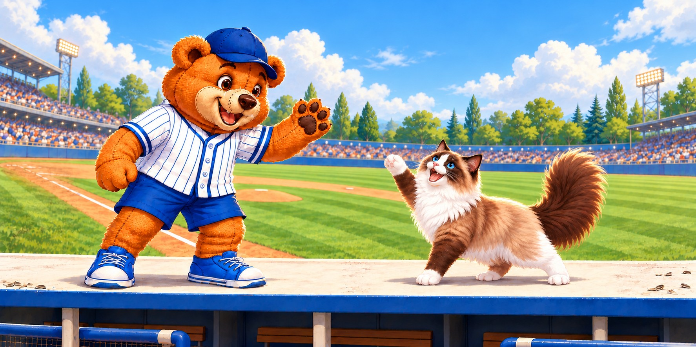
NEW OPTION — Polish pass on the gold — same scene, mascot costume identity-checked seam by seam.
Details
S15-Y WHY: Whole-book polish pass (Jon's call, 2026-10-25) — a polish of gold S15-X, NOT a new scene: the Hibernator on the dugout roof waving, Harlow on the roof waving back, kept exactly (no foam finger, as the gold stages it). Polish applied: light graded to ballpark day, matched to the S13-S16 shared light; the text sky across the top kept open; the center seam falls on open field and sky, no main face in the 44-56% band. Identity gate (Jon's tightened rule, close read): the Hibernator is unmistakably a PERSON IN A BEAR MASCOT COSTUME — stitched seams up the arms and legs, stitched muzzle, glossy mascot eyes, stitched paw pads, fabric pile — in his navy cap, pinstripe jersey, navy shorts and blue sneakers (the blues render a touch brighter than the gold's navy; flagged for Jon's eye). Harlow matched to the hero portrait. GATE: PASS. One native generation, governed directly off the gold. Master s15-y-master.png, native 1774×887, md5 ae79e70d…. Posted PLAIN on Spread Options and Final Pass V2; seated here as a NEW option on Jon's explicit call (2026-10-25) for the whole-book polish pass.
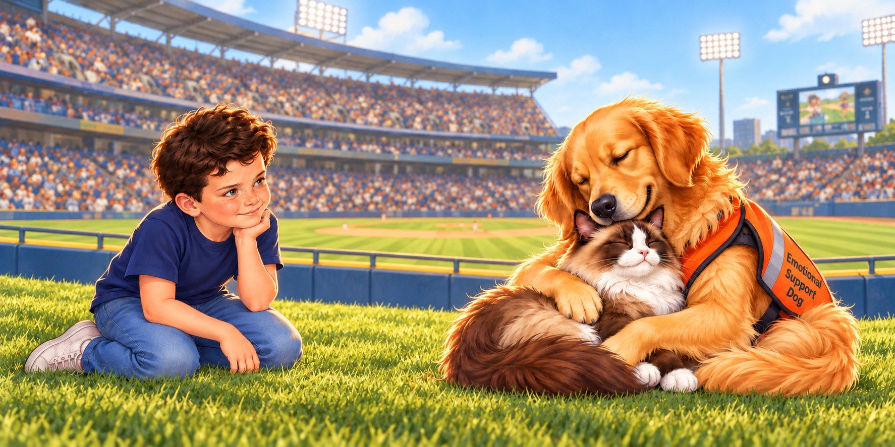
★ GOLD — Edward’s hug, with JJ watching.
Details
S16-O V4 · carried from V3 as-is ★ GOLD — Jon + Lois's pick, carried from V3 as-is.
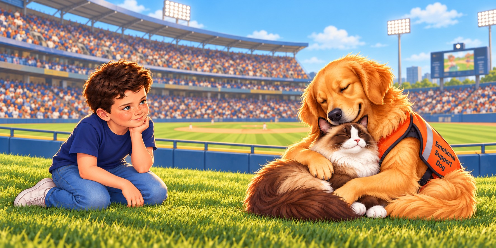
NEW OPTION — Polish pass on the gold — same scene, vest lettering exact, JJ Boy identity-checked.
Details
S16-U WHY: Whole-book polish pass (Jon's call, 2026-10-25) — a polish of gold S16-O, NOT a new scene: JJ Boy kneeling at left with his chin on his hand, Edward hugging a blissful Harlow at right on the ballpark grass, kept exactly. Polish applied: light graded to ballpark day, matched to the S13-S16 shared light (this spread closes the set); the text sky across the top kept open; the center seam falls on open field and stands, no main face in the 44-56% band. Identity gate (Jon's tightened rule, per-character close reads): JJ Boy is himself — dark brown wavy hair with the forehead curl, bluish-green hazel eyes, freckles, navy tee; Edward's golden coat and blissful closed eyes held, and his ORANGE vest lettering reads exactly 'Emotional Support Dog' — the book's one approved lettering, kept verbatim; Harlow's eyes stay closed and blissful in the hug, markings true. GATE: PASS. One native generation, governed directly off the gold. Master s16-u-master.png, native 1774×887, md5 7a8923f9…. Posted PLAIN on Spread Options and Final Pass V2; seated here as a NEW option on Jon's explicit call (2026-10-25) for the whole-book polish pass.
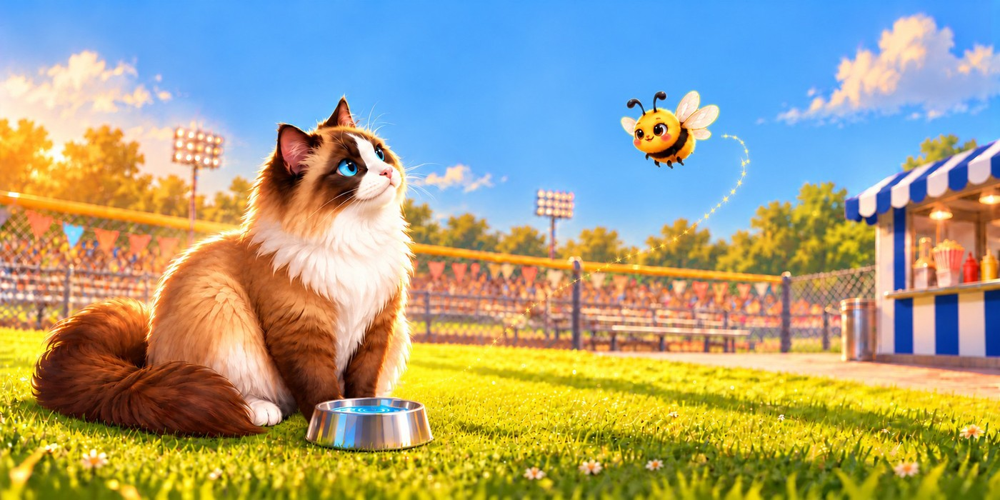
★ GOLD — Harlow and Jasmine the bee at the ballpark. (Your cleanup.)
Details
S17-U V5 · Jon’s own Photoshop cleanup of T — bowl paw area cleaned by hand, posted as-is — Jon's S17 gold ★ GOLD — S17-U · the S17 gold on Final Pass V5 — Jon named U — his own Photoshop cleanup of T — the new S17 gold on 2026-10-24, taking the gold from S17-Q, and called S17-Q, S17-R, S17-S and S17-T safe to remove from V5 the same night (Q, R, S and T stay live on Spread Options and Final Pass V2). S17-U — Jon’s Photoshop cleanup of T: the bowl/paw area finished by hand · WHY it was made: after two masked-cleanup rounds (S, then T), Jon took T into Photoshop himself (2026-10-24, 00:45 PDT), cleaned the bowl paw area to his own eye, and handed the file back to be posted as U at his direction. NO generation and no agent edit: U is Jon’s file, posted as-is — the bowl sits in level grass, the front leg reads uncovered down to the mitt, the extra-paw remnant and the last grass hump at the bowl are gone, and the rest of the frame is T’s art exactly (Harlow with his gaze on Jasmine; Jasmine — exactly one black stripe, two wing pairs, six legs — her sparkle trail, the blue-and-white shack, the sky). Trinity’s own visual pass on Jon’s file agrees with his read: the bowl zone is clean at 3x and the whole frame reads as T. METHOD + RECORD: Jon’s Photoshop edit on S17-T (posted image md5 45ebee59…); his PNG master banked at s17-fix-2026-10-23/pass13/S17-U-master-jon-photoshop.png (1774×887, md5 dee0de84…); full record in S17-FIX-PASS.md (pass 13). Posted PLAIN on Spread Options and Final Pass V2, seated PLAIN here beside Q, R, S and T. S17-Q keeps the gold; T stays posted untouched.
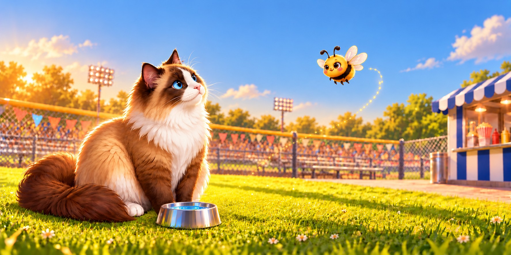
NEW OPTION — Polish pass on the gold — same scene, Jasmine’s one stripe verified at close crop.
Details
S17-V WHY: Whole-book polish pass (Jon's call, 2026-10-25) — a polish of gold S17-U, NOT a new scene: Harlow by his water bowl on the grass looking up, Jasmine above him with her sparkle trail, the snack shack at frame-right, kept exactly. Polish applied: light graded to late afternoon — the arc's first gold, warm and low, smooth and calm; the text zone kept open in the sky across the TOP, as the gold stages it; the center seam falls on open sky and fence line, no main face in the 44-56% band; the steel bowl kept at frame-bottom with its blue water. Identity gate (Jon's tightened rule, per-character close reads): Jasmine verified at close crop — round golden bee with EXACTLY ONE black stripe, rosy cheeks, curly antennae; Harlow matched to the hero portrait, gaze up on her. GATE: PASS. One native generation, governed directly off the gold. Master s17-v-master.png, native 1774×887, md5 bc9774a5…. Posted PLAIN on Spread Options and Final Pass V2; seated here as a NEW option on Jon's explicit call (2026-10-25) for the whole-book polish pass.
★ GOLD — Babs the crab on the beach at sunset.
Details
S18-V V4 · U — sand-texture pass, prints stay behind ★ GOLD — S18-V · Jon promoted it 2026-10-22: U's coverage version with the open sand re-textured toward S18-L's grainier, more dimensional sand — the footprints stay behind the animals, and Harlow, Babs, the shells, sky and sea are U's exact pixels.
NEW OPTION — Harlow back to his book build and blaze.
Details
S18-Z WHY: Jon's consistency call (2026-10-25) — in S18-Y, Harlow read rounder and a little different from the rest of the book. This pass governs directly off the gold and his hero portrait: the sturdy athletic-plush build, neat controlled fur and moderate blaze of the book's Harlow, with one new subtle expression — gentle curiosity warming into a small hopeful smile, head tilted a touch toward Babs. Babs stays far left; paws down; boardwalk kept. GATE (Trinity, whole frame against gold V + the hero portrait): Harlow consistent; polish held. One native generation. Master s18-z-master.png, native 1774×887, md5 6e2e40a4…. Posted PLAIN on Spread Options and Final Pass V2; seated here as a NEW option on Jon's explicit call (2026-10-25). S18-V keeps the S18 gold.
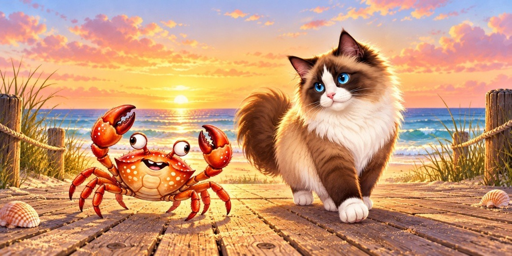
NEW OPTION — Jon's walking-Harlow boardwalk, up for comparison.
Details
S18-AC WHY: posted at Jon's ask (2026-10-25) so he can compare it directly against the other boardwalk versions — this is the render he sent in chat: Babs front-left ON the boards waving both claws, Harlow mid-stride WALKING toward the viewer at frame-right, a richer pink-orange sunset sky, rope posts and shells at the boards' edges. It is NOT the card from Lois's notes (that is S18-D — seated Harlow — rebuilt as S18-AB); Jon thought this might be the scene she wanted, and wanted it on the page either way. Source file as supplied: 1140×570 JPEG — smaller than the native renders, so if it is ever picked it needs the upscale pass before print. Banked as s18-ac-master.jpg, md5 e9dfc877…. Posted PLAIN on Spread Options and Final Pass V2; seated here as a NEW option on Jon's explicit call (2026-10-25). S18-V keeps the S18 gold.
NEW OPTION — He turns to her; she turns to him.
Details
S18-AF WHY: Jon's pose pass on S18-AE (2026-10-25) — Harlow's head was tilted too far; Jon asked for his BODY turned a little more toward Babs instead, and for Babs' whole body angled slightly toward Harlow. This version does both: Harlow's chest and shoulders turn toward her so his head sits nearly upright, tipped down only slightly, eyes still landing on her at her height, inquisitive almost-grin kept, all paws down; Babs turns a touch toward him while her pupils keep the outward splay from AE. GATE (Trinity, whole frame + Babs zoom against gold V + the portraits): head tilt natural now; splay confirmed again at zoom; build and polish held. One native generation, governed off AE. Master s18-af-master.png, native 1774×887, md5 3137e5f0…. Posted PLAIN on Spread Options and Final Pass V2; seated here as a NEW option on Jon's explicit call (2026-10-25). S18-V keeps the S18 gold.
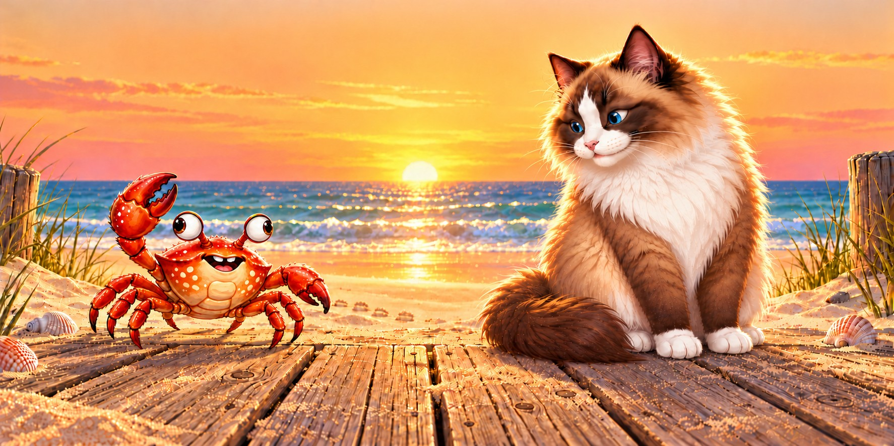
NEW OPTION — Same scene, book-sized eyes.
Details
S18-AG WHY: Jon's proportion check on S18-AF (2026-10-25) — he wondered if Harlow's eyes ran large against the rest of the book. Trinity measured: the book norm is round-to-almond eyes at roughly 9-11% of head width (hero portrait, S12 gold); AF ran ~12-13% and tall wide-open ovals. This pass changes only the eyes — scaled to book proportion, rounder, calmer lids, native blue and pupil size kept, gaze still on Babs. Everything else is AF: the mutual body turn, Babs angled toward him with her splayed pupils, the boardwalk sunset. GATE (Trinity, same-crop measurement against AF + the hero portrait): eyes now sit inside the book range; the surprised read is gone; polish held. One native generation, governed off AF. Master s18-ag-master.png, native 1774×887, md5 1d99c703…. Posted PLAIN on Spread Options and Final Pass V2; seated here as a NEW option on Jon's explicit call (2026-10-25). S18-V keeps the S18 gold.
NEW OPTION — Polish pass on the gold — same scene, Babs’ splayed pupils verified at close crop.
Details
S18-AH WHY: Whole-book polish pass (Jon's call, 2026-10-25) — a polish of gold S18-V, NOT a new scene: Harlow walking the wet sand at left with his paw prints trailing, little Babs at the far right edge, the lighthouse point behind, kept exactly. Polish applied: sky graded to sunset just starting — sun low ON the horizon, the book's first sunset; the text sky across the top kept open and calm; the center seam falls on open sea and sky, no main face in the 44-56% band; NO bee. Identity gate (Jon's tightened rule): the first render was HELD and never posted — Babs came out oversized with centered pupils. This retry holds her at close crop: small at frame-right, red-orange with cream spots, eight legs and two big claws, two small white upper teeth, and her eyestalk pupils SPLAYED OUTWARD to the edges, exactly canon. Harlow's head is lowered, gaze down onto her, matched to the hero portrait. GATE: PASS on the retry. Master s18-ah-master.png, native 1774×887, md5 90e3fb8c…. Posted PLAIN on Spread Options and Final Pass V2; seated here as a NEW option on Jon's explicit call (2026-10-25) for the whole-book polish pass.
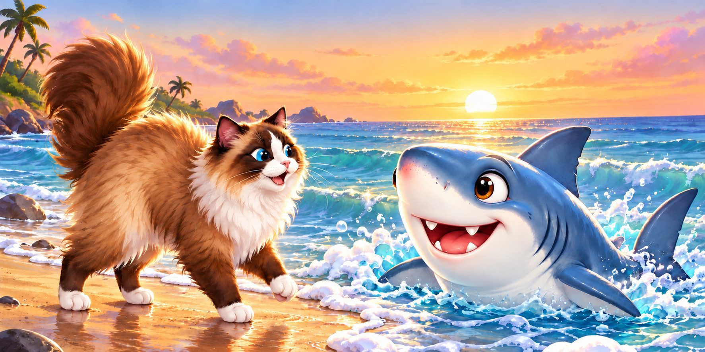
★ GOLD — Finnegan the shark at sunset. (Jon's corrected Photoshop pass.)
Details
S19-R V6 · Jon's corrected Photoshop version — Jon's S19 gold ★ GOLD — Finnegan the shark at sunset. WHY: Jon caught his own Q within the hour and corrected it — R is his final hand adjustment on the Q frame, settling Harlow's coat where he wants it. Pixel-diff on banking: R sits almost on top of Q (overall mean difference 1.00; 1.6% of pixels changed, none hard) and every change is in Harlow — the Finnegan half of the frame is byte-identical to Q (mean difference 0.00, 0.0% of pixels). In the coat zone the mean difference is 4.31 (9.1% of coat pixels), the coat reading a touch deeper and warmer than Q (coat means red 178 vs Q's 180, blue 90 vs Q's 95); against the O frame R sits at mean difference 2.86 — R is a correction of Q, not a new pass on O. Pose, expression, eyeline, Finnegan (exactly 4 teeth), surf, sunset and sand untouched. Posted as-is. Master S19-R-master.png, md5 4b3186eff6c132d5e0f045d8d0b729d3. At Jon's call Q comes off V6 (it stays live on Spread Options and Final Pass V2); M, O and P were already off V6. Jon's gold — 2026-10-24.
NEW OPTION — Low at the water, sun down, text band open.
Details
S19-T WHY: Trinity's free-pass S19, on Jon's brief (2026-10-25). A new low angle at water level: Finnegan close and gentle at frame-right with exactly four small teeth and his pink tongue (his locks), Harlow small at the waterline at frame-left looking up. The time step is made explicit — the sun is fully BELOW the horizon, one beat after S18's starting sunset, with the afterglow band open across the top for the text and no palms anywhere. GATE (Trinity, whole frame against gold R): polish held; four-tooth lock held; Harlow's face clear of the fold. One native generation. Master s19-t-master.png, native 1774×887, md5 36fc176a…. Posted PLAIN on Spread Options and Final Pass V2; seated here as a NEW option on Jon's explicit call (2026-10-25). S19-R keeps the S19 gold.
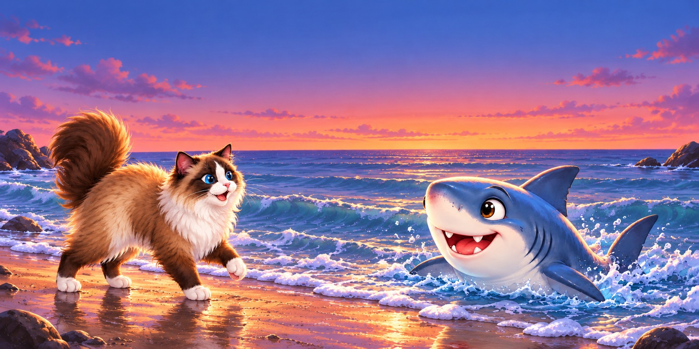
NEW OPTION — Fixes the sun-order and frond flags from the print test.
Details
S19-S WHY: text/continuity alt, on Jon's call after the v3.2 print test (2026-10-25). Two flags on the gold: its full sun sits HIGHER than S18's sunset sun (the light arc runs backwards), and its palm fronds cross S19-L's text ('caught' lands on a frond). NEW shot one beat later in the light: sun below the horizon, rose afterglow over a calm sea, no palms anywhere — the top band is open dusk sky for the text on both halves; Harlow startled mid-step on the wet sand; Finnegan surging gently out of the small surf, friendly, with exactly four small teeth and his pink tongue. GATE (Trinity, whole frame against gold R): polish held; Finnegan's four-tooth lock held. One native generation. Master s19-s-master.png, native 1774×887, md5 5ee8f26c…. Posted PLAIN on Spread Options and Final Pass V2; seated here as a NEW option on Jon's explicit call (2026-10-25). S19-R keeps the S19 gold.
★ GOLD — A quiet walk with the penguin at dusk.
Details
S20-J V4 · carried from V3 as-is ★ GOLD — Jon + Lois's pick, carried from V3 as-is.
★ GOLD — Helga the pelican carries Harlow home. (Your touch-up.)
Details
S21-X V5 · Jon’s own Photoshop pass on T — Harlow’s face + Helga’s feathers adjusted by hand, posted as-is — Jon's S21 gold ★ GOLD — S21-X · the S21 gold on Final Pass V5 — Jon named X — his own Photoshop pass on T — the new S21 gold winner on 2026-10-24, taking the gold from S21-W, and called S21-T safe to remove from V5 the same night (W stays on V5 as a plain card; T stays live on Spread Options and Final Pass V2). S21-X — Jon’s own Photoshop pass on T: Harlow’s face and Helga’s feathers adjusted by his hand · WHY it was made: Jon took T’s sunset frame into Photoshop himself (2026-10-24, 01:37 PDT), adjusted Harlow’s face and Helga’s feathers to his own eye, and handed the file back to be posted as X at his direction. NO generation and no agent edit: X is Jon’s file, posted as-is — Harlow’s face reads clean and portrait-true in the pouch (seal cap, continuous blaze, blue eyes, joyful open mouth with pink tongue and no teeth, one white mitt on the pouch rim and the raised wave paw with clean pink pads), Helga’s wings read in the frame’s grouped cartoon hand, and everything else is T’s art exactly (the wisp sunset sky, the sea, Babs the cockatiel on the driftwood, the beach and props). Trinity’s own visual pass on Jon’s file agrees with his read: the face and feathers sit naturally in the frame at 3x and the whole frame holds together as T. METHOD + RECORD: Jon’s Photoshop edit on S21-T — pixel check: his file measures closest to T’s posted art of every S21 frame (mean |diff| 3.1 against spread-options/s21-t.jpg), the change concentrated at Harlow’s face and Helga’s wings; his PNG master banked at s21x-jon-photoshop-2026-10-24/S21-X-master-jon-photoshop.png (1774×887, md5 4616de52…); full record in S21-ALT-RECORD.md. Posted PLAIN on Spread Options and Final Pass V2, seated PLAIN here beside T and W. S21-W keeps the S21 gold on V5; T stays posted untouched.
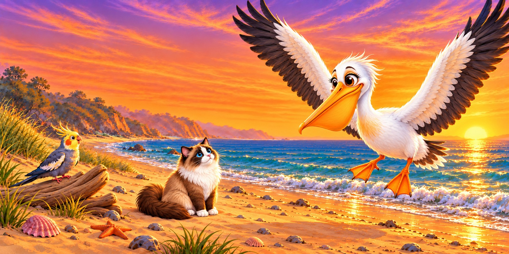
NEW OPTION — Small enough to ride in the pouch now.
Details
S21-AA WHY: Jon's scale fix on S21-Z (2026-10-25) — he liked Z, but Harlow looked too big: 'he would never fit inside Helga's pouch on her bill.' This pass flips the scale: Harlow small in the mid-ground (his seated figure about a quarter of the frame height), Helga large and descending close, her bill pouch clearly roomy enough to carry a cat of exactly his shown size. His seated pose and broad head from Z are kept. GATE (Trinity, whole frame against gold X): polish held; Babs correct on the driftwood; seam band holds only sky and sea. One native generation. Master s21-aa-master.png, native 1774×887, md5 1975db81…. Posted PLAIN on Spread Options and Final Pass V2; seated here as a NEW option on Jon's explicit call (2026-10-25). S21-X keeps the S21 gold.
NEW OPTION — Helga glides in; Harlow waits small below.
Details
S21-AB WHY: Trinity's free-pass S21, on Jon's brief (2026-10-25). A new moment — Helga arriving: gliding in low over the water from frame-right with her wings wide in a landing flare and her pouch closed, while Harlow sits small at frame-left (S21-AA's corrected carrying scale) watching her come in; Babs the cockatiel keeps watch from the driftwood. Late golden light, right for S21's place in the day's arc. GATE (Trinity, whole frame against gold X): polish held; faces clear of the fold. One native generation. Master s21-ab-master.png, native 1774×887, md5 1e1f6781…. Posted PLAIN on Spread Options and Final Pass V2; seated here as a NEW option on Jon's explicit call (2026-10-25). S21-X keeps the S21 gold.
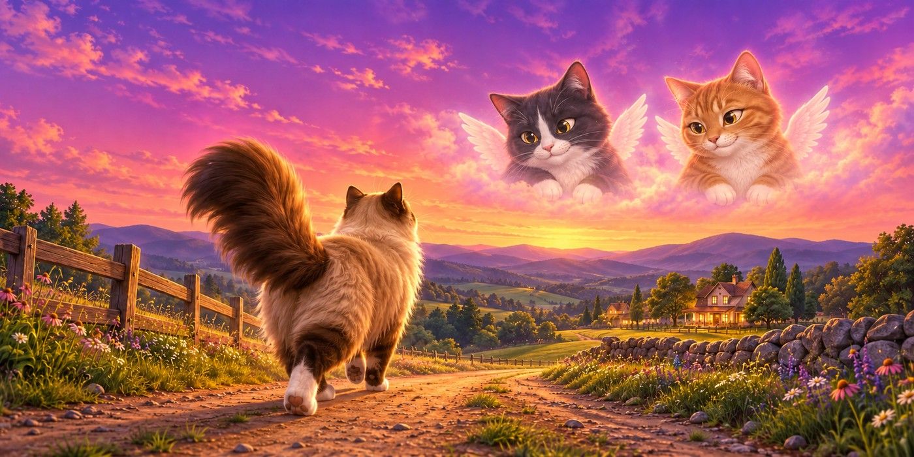
★ GOLD — Mittens and Teddy watch over Harlow in the sunset sky.
Details
S22-AQ Candidate — Jon’s S22 gold ★ GOLD — S22-AQ · the S22 gold on Final Pass V5 — Jon named AQ the new S22 gold winner on 2026-10-24, taking the gold from S22-AO, which he removed from V5 the same night (AO stays live on Spread Options and Final Pass V2). S22-AQ — Pass 17: a little ghostlier, a little lower · Why it’s here, in short: Jon’s try-it alt (2026-10-23, 23:49 PDT) off S22-AP — pass 16’s wording 1, the walking take he picked as his favorite of that pair. One fresh generation governed on AP’s frame, changing only two dials: (1) Mittens and Teddy a little MORE GHOSTLY — more of the sunset sky shining through their bodies and wings, their edges dissolving a touch further into the cloud bank, while every facial marking stays crisp and the bright open-eyed read is kept; (2) the pair seated a LITTLE LOWER in the sky, so they are not so high. Held from AP exactly: Harlow’s mid-stride walk (hind feet apart, the near foot pushing off with pads up, the far foot lifted), his cream-tan tonal map (measured across flank, rump and tail — not one flat cream), the finer detail finish (less cel, not painterly), the bright violet-rose sky at AP’s brightness, strict canon at 3x for both cats (Mittens black-based, narrow tapering nose-bridge stripe, no tabby marks, pink nose, short close fur; Teddy forehead M, cheek stripes, pinkish-brown nose, mid-chest bib, the smirk), gazes angled softly down at Harlow, exactly 2 faces, 4 wings, one paw pair per cat, no doubles, no sun disc — the horizon carries a diffuse glow only. Gate measurements, stated plainly: nose landmarks Mittens (60.4%, 31.7%), Teddy (80.1%, 31.1%) against AP’s (63.3%, 26.2%) / (82.0%, 24.6%) — the pair came down 5.5 and 6.5 points, clearing the ‘a little lower’ gate by a wide margin and then some; disclosed shades — the descent also drifted the pair left of the (64, 29) / (83, 28) aim, and Mittens’s left ear reaches about x50%, deeper into the gutter strip than AP’s: this take traded rightward for downward, and it is posted as the ghostlier-and-lower try, not as a seat fix. Story-checked against Rev.17 page 22. S22-AO keeps the gold. Master s22-fix-2026-10-23/pass17/S22-fix17-w2-master.png (md5 89194508…); full record S22-FIX-PASS.md (pass 17 section). Posted PLAIN on Spread Options and Final Pass V2; seated PLAIN here in the S22 group under the standing lane.
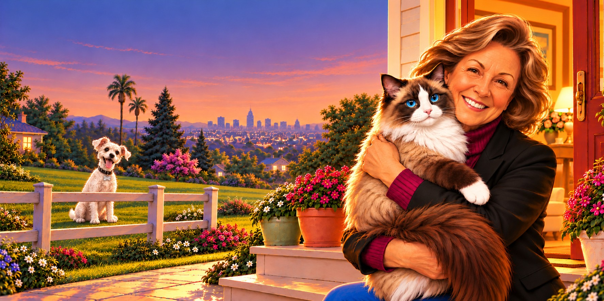
★ GOLD — Home at last, in Lois’s arms.
Details
S23-AJ S23 fresh generation — painted whole, no compositing: AF’s look and the right-side placement, brooch off — Jon's S23 gold ★ GOLD — S23-AJ · Jon named AJ the S23 gold winner "for now" on 2026-10-23 — the fresh no-composite generation that replaced AI, taking the gold from AF. Jon’s call (2026-10-23): AI’s masked composite still showed its edges on his crop — a ghost hand behind Lois’s gripping hand and smeared, doubled fur around Harlow’s ear and shoulder — so this version replaces the whole approach: one fresh native generation, painted whole in a single pass, no masks, no moves, no compositing anywhere. It holds AF’s look and feel — the backyard homecoming at sunset, AF’s own sky (deep blue-violet melting to rose and peach at the skyline, thin streak clouds, no warm re-grade), Wally small and seated in the next-door yard — with the pair composed at the right-side placement Jon asked for: Lois’s face center ≈79.5% across, Harlow’s ≈69%, both clear of the fold strip. Lois’s face is governed by her canonical chin-crop alone (soft round face, fuller cheeks, smoother brown waves, eyes opened slightly); plum-burgundy turtleneck and black jacket, brooch OFF per Lois’s S23 call. Hands gated at 3x after Jon’s crop: exactly two hands, natural anatomy, one clean edge against the fur — no ghost hand. Harlow’s ears gated at 3x: both natural, seal-brown and fur-covered with only a small pink tint inside — AH’s oversized fleshy ear does not recur. One disclosed shade: the sky meters a step more saturated than AF’s (+~0.06 saturation, value level) — same palette and cloud family. Wording 2 of 2: wording 1 passed every quality gate but held the pair at AF’s older framing, so this take shifts only the composition. Story-checked against Rev.17 page 23. Posted PLAIN beside AF; on Jon's 2026-10-23 call AJ took the S23 gold and AF was removed from V5 (AF stays live on Spread Options + Final Pass V2).
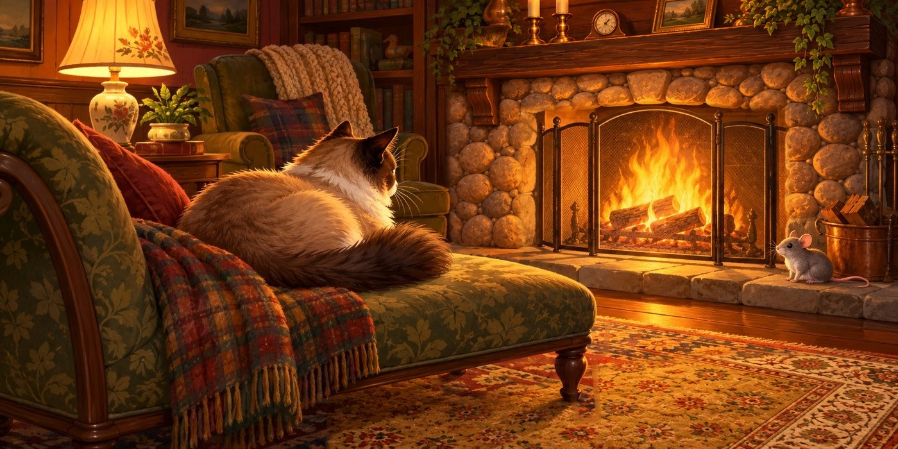
★ GOLD — The fireside finale from behind: Harlow curled on the chaise, gazing into the fieldstone fire, Little Mouse at the hearth.
Details
S24-AM Candidate — Jon's own revised version, 2026-10-24 — replaces the earlier AM art on his order and takes the gold. The frame is the back-view fireside finale: Harlow curled on the green chaise with his back to us, gazing into the fieldstone fire, tail swept across the cushion, Little Mouse small at the hearth's right edge by the copper bucket, the floral lamp and its side table at the left. Pixel record (Trinity, 2026-10-24): Jon's art derives from the S24-AD fieldstone frame — the whole frame tracks AD within re-encode distance — and it carries the cleaned lamp table from Lois's notes, the plant pot seated on one solid burgundy hardcover as fixed in S24-AN; Jon's original file is banked unscaled as the master. The earlier S24-AM art (the darker-rug wingback alt) is replaced under this letter on Jon's order; it was never the frame above. S24-AD and S24-AN were removed from V6 in the same call and stay live on Spread Options and Final Pass V2. Jon's gold — 2026-10-24.